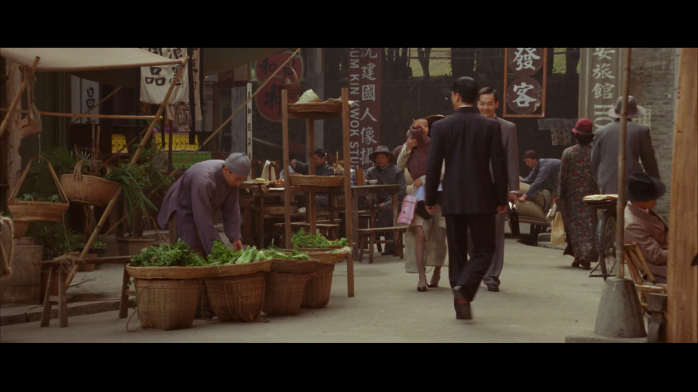
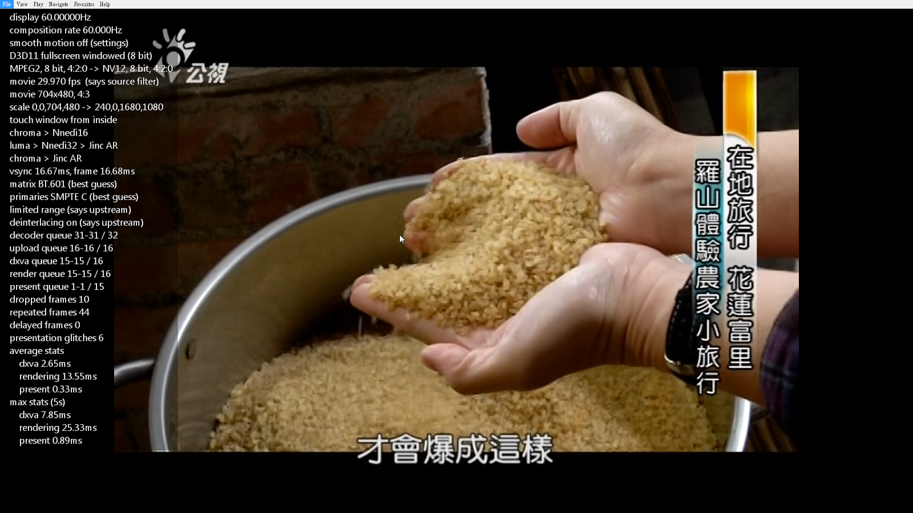
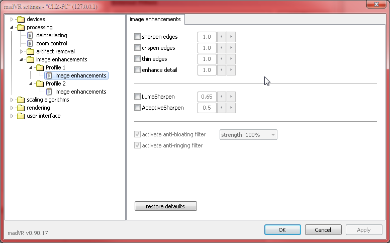
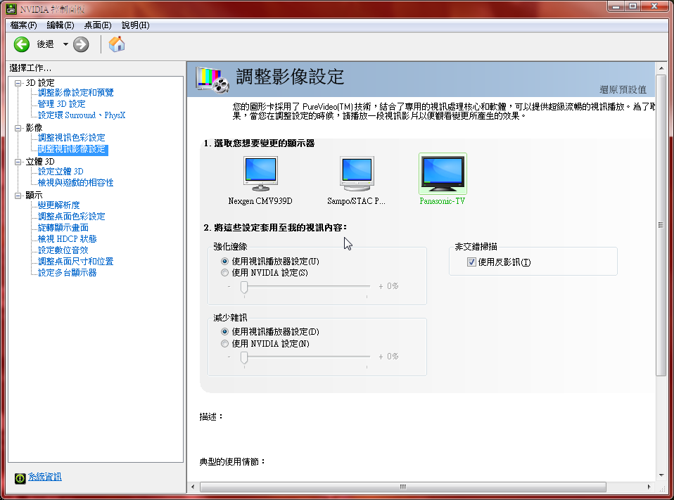

转载自系列之3─最強渲染器-madVR，作者： 暮星
2018/06/20更新madVR教學文部分內容(對應v0.92.14)
感谢！
前言
在介紹這東西之前，先用張圖來複習一下上回提到的播放過程：
這邊可以看到視訊輸出的最後一道過程就是Video Renderer(視訊渲染器)的部分，同時這個部份也是對畫質影響最吃重的一個部分，在來源檔案相同的前提下，可以說影像播放的畫質好壞取決於渲染器之上也不為過，而madVR正是以此為最大賣點的渲染器，此渲染器是由DOOM9論壇上的madshi所開發，不惜一切效能代價以換取最大的畫質表現，也因此這個渲染器對顯卡的要求稍微吃重些，超越了我們一般對播放軟體之硬體要求的常識(這個常識是指，只有玩遊戲才需要用到較高階的顯卡，影像播放只需要低階顯卡甚至內顯已可勝任)，我們最好以run一個遊戲的標準來看待其所需要的效能。但並不是說只有好的顯卡才能用這個渲染器，事實上madVR內部的選項相當彈性，根據設置的不同它可以讓低階卡跟內顯順順跑，也可以把TiTan操爆，一般來說，我建議在能力許可的範圍內選擇一張不算太差的獨立顯卡才能發揮它該有的戰力。
翻譯一下開發者madshi提到關於madVR的一些特色：
- 高品質的chroma upscaling(下面內文會再解釋這東西)
- 高品質的scaling(各種升降頻演算法)
- 高品質的YCbCr→RGB轉換
- 對螢幕執行gamut和gamma的調色校正
- 內部演算皆為16bit的高精度處理
- 最後處理完成的16bit訊號dithered降轉成8bit RGB輸出
- 避開各種顯卡內加料(對畫質有負面影響)的演算法
- 所有作業皆透過GPU shaders完成(IVTC運算除外)
- 以追求最高品質為第一優先
再重申一個觀念，視訊檔案的播放，解碼吃的是CPU效能(硬解例外，硬解是使用顯卡上的解碼模組，既不吃CPU也不吃GPU效能)，而渲染才是吃顯卡GPU效能，使用madVR時，GPU的效能很重要。
madVR下載
接下來進入正題，首先先到官方討論頁下載最新版的madVR
http://forum.doom9.org/showthread.php?t=146228
或是到madVR官網下載：
http://madvr.net/
http://madvr.com/
madVR目前還沒有安裝檔，madshi說他想到v1.0時再做安裝檔，所以下載後解壓縮完自行將資料夾丟到想放的位置，像我還是習慣丟到Program Files (x86)下面，之後進madVR資料夾裡點一下”install.bat”就會出現濾鏡註冊成功的訊息，以後要更新madVR只需要將資料夾整個蓋過去即可。
“restore default settings.bat”這個執行檔可回復所有的madVR設定到初始預設值，如果設定時亂了套或是出現問題，可以點擊這個執行檔，重新開始。
madVR的初始預設值是重視效能取向和穩定性的，也就是讓大部分的顯卡都可以正常運作為前提的設置，懶的研究設置的朋友用預設值也可以順順使用madVR，但如果想要進一步發揮madVR強大的功能，我們就再繼續看下去。
到MPC-BE裡的選項>視訊底下應該可以選擇madVR了
播放影片時，右鍵>篩選器，底下選擇madVR可以打開madVR的設定頁，或是右下角的工具列madVR圖示上點右鍵並選擇”Edit madVR settings”，或是直接按Ctrl+S，或是在外掛濾鏡裡加入madVR並點兩下都可以打開設定頁

madVR設置
打開設定頁，並將項目展開：
devices
“devices”底下為目前連接的螢幕，目前顯卡抓到幾個這邊看到的就是幾個，將螢幕底下的項目展開可再針對各個螢幕做設定
第一個要先選擇螢幕的種類，我想應該不用多做解釋了，是哪種螢幕就選哪種，一般液晶/電漿/OLED螢幕或電視選擇”Digital Moniter/ TV”即可，如果是投影機則選擇”Digital Projetor”
properties
到”properties”這頁，選擇該螢幕的output level，一般而言電腦螢幕選0-255，電視的話選16-235，不過有些較新的電視也接受0-255的訊號，這邊注意電視的設置與madVR的設置要一致，否則有些色階會被切掉，俗稱黑位錯誤。(顯卡控制介面上的設置則一律設為”由應用程式決定”即可，madVR會決定最後輸出的output level)
詳細可參考我的另一篇：淺談HTPC與色彩管理─緒論與前置作業(1/4)
http://lysandria1985.blogspot.tw/2014/06/htpc14.html#more
而bitdepth的選擇，這邊可以維持預設的”auto”讓madVR自行判斷即可。
如果螢幕是原生8bit(16.7百萬色)或更高，或6bit dither(抖色)處理後有辦法完整顯示16.7百萬色，則選單裡可選擇8bit；如果螢幕是6bit dither(抖色)成8bit且只能顯示16.2百萬色的話，且螢幕自身的抖色效果不佳的話，選單裡可選6bit或7bit，madVR會增加抖色(dithered)輸出的強度，色階過渡會比較好點(但會增加一些噪點)，一般而言TN面板的LCD螢幕6bit抖色的居多，IPS/VA面板比較有可能是原生8bit或以上。
至於10bit輸出，除非能完全確定螢幕能夠接受10bit訊號輸入並且顯卡驅動程式也能夠輸出10bit，才去選擇這個選項，如果不能100%確定，那還是建議選擇8bit輸出，madVR的dithered 8 bit輸出的效果跟10bit輸出其實差異很小，實際觀賞時肉眼幾乎難以查覺差異。
另外需注意，10bit輸出，只有在D3D11 的FSE(全螢幕獨佔)模式下(這是general serttings那邊的設定)或是win10作業系統下的視窗全螢幕模式才能達成(不過目前排除了NV卡，因為其驅動以此法輸出10bit會有造成banding的bug出現，故NV卡目前除了FSE模式外都是強制輸出8bit)。
如果你無法確定你的螢幕要選擇哪種bit數，請自行用灰階影片來測試，看選擇哪一個bit數的色階過渡效果最好，色階斷層(banding)最不明顯，那個就是最適合你的螢幕的bit數設置。
另外關於6bit以下的選項，那些只是給你做dither算法的測試時使用的，不要做為常駐選項
關於dither這技術的原理可參考此篇文章
http://www.ptt.cc/bbs/LCD/M.1374130301.A.402.html
3D format這項，在觀看3D影片時才有作用，一般設為auto就好，如果顯示裝置接受特定的3D顯示形式才需要去切換
calibration
到”calibration”這頁，可以看到四個選項，一般螢幕如果沒有經過校色器校色過或是不確定色域的話可維持選第一項”disable calibration controls for this display”就好了，最下面那個”disable GPU gamma ramps”如果沒有校色過的話就不要勾選
如果該螢幕經過校色器校色過或是螢幕有色域選項而且其出廠標準可以信任的話，可以選第二項”this display is already calibrated”，gamut跟 gamma就依校色時的條件去選擇
第三項”用yCMS校色”跟第四項”用3DLUT檔校色”，一樣需要有校色器的配合，yCMS是將校色過後的三原色跟灰階資訊自行輸入，而3DLUT則是用校色後的資訊產生一個獨立的3DLUT檔來使用，目的都是為了能讓片源配合螢幕及環境光源狀況達到最正確的輸出，能夠呈現影片製作者原本要表達的畫面，而不會因為顯示器和傳輸媒介的個別差異而被扭曲得亂七八糟。後面兩項使用的話顯卡記憶體必須要有至少1GB以上，因為這兩項功能會建立Lookup tables，會占用大量的顯卡記憶空間。
有興趣的朋友可先參考此網址：
http://www.avsforum.com/t/1471169/madvr-argyllcms
目前由於ArgyllCMS和dispcalGUI的兩位開發者都把madVR加入支援，所以已經有一套很完善而且簡單的校色流程，只需要去租用一個校色器(建議是光譜儀 colormunki photo、colormunki design或i1 pro之類的)，照上面網址教學操作很簡單就能完成，做出必要的3DLUT檔。
當然校色的領域博大精深，其中有不少的know-how，所以也請原諒我的無限期拖稿，等小弟玩出些心得會再另發專文分享。
display modes
到”display modes”這頁，這部分是在播放影片時即時改變顯示模式用的，可選擇播放時改變或是全螢幕時再改變，然後再選擇結束播放或是結束全螢幕時要不要改回來。這部份的功能是在顯示裝置有支援多種顯示模式時使用的(像有些電視或投影機有24P輸入模式，或要在59Hz和60Hz之間切換)，可讓其配合影片更改螢幕更新率或是解析度，若螢幕沒支援的話這部分不用勾選。
解釋一下選項：
switch to matching display mode…(啟用播放時切換顯示模式)
…when playback stars (只要開始播放就切換)
…when media player goes fullscreen (只要全螢幕播放時才切換)
restore original display mode…(結束播放時切換回原來的顯示模式)
…when media player is closed (播放器關閉時才切回去)
…when media player leaves fullscreen (只要退出全螢幕就切回去)
要使用自動切換功能，必須在下方的”list all display modes madVR may switch to:”底下那個空格填入螢幕能使用的顯示模式，沒填的話就沒有自動切換作用。
以我的panasonic電視為例子來說，它的更新率在1920*1080下支援23Hz(實際約23.976附近)、24Hz、29Hz(實際約29.970附近)、30Hz、59Hz(實際約59.94附近)、60Hz這六種，將其輸入可以讓madVR更精確的切換電視螢幕更新率以對應不同幀率的影片，以上面例子來說，我會在欄位輸入1080p23、1080p24、1080p59、1080p60這四種(29Hz跟30Hz沒必要，因為用其倍數的59Hz跟60Hz來顯示更好)，1080p23對應幀率23.976 fps的影片，1080p24對應幀率24 fps的影片，1080p59對應幀率29.970和59.940 fps的影片，1080p60對應幀率30和60 fps的影片。
當然這些只是舉例，如果是用2K或4K螢幕的話，前面請自行換成1440p_或2160P _
另外有個”treat 25p movies as 24p”這功能要配合Reclock使用，目的是讓歐規PAL 25p的影片能夠降速到24p去配合24p的顯示模式，如果沒有在看歐規影片的話這部分也不用理會。
而”hack Direct3D to make 24.000Hz and 60.000Hz work”這個選項，在系統是win8.1或win10時才有作用，win8.1和win10，有時候會發生螢幕更新率無法在需要時(要對應24fps或60fps影片時)變更成24Hz和60Hz(螢幕更新率會鎖在23.976Hz或59.940Hz)，這個選項可以解決這個問題，但可能有個副作用是會造成presentation queues填不滿，所以依個人需要決定要不要勾。
此外，”display modes”這頁的設定還有另一個分頁”custom modes”，這是madVR的另一項有用的螢幕更新率自訂及微調功能，詳情請參考我的另一篇介紹文章：
系列番外篇之3─是時候拋棄Reclock了？ madVR螢幕更新率微調功能簡介與實作
color & gamma
到”color & gamma”這頁，如果方才的”calibration”那頁裡面選擇的是第一項”disable calibration controls for this display”，gamma是預設為pure power curve 2.2，這時勾選”enable gamma processing”並設定為pure power curve 2.2的話不會有任何改變，如果設為其他值才會改變gamma
“calibration”這項如果有設定，舉個例子，假設我設定gamma為BT.709 1.8，這時不勾選或是勾選”enable gamma processing”並設定為BT.709 1.8的話都不會有任何改變，但如果設為其他值就會改變gamma的輸出
現在回到為什麼要改變gamma輸出的問題，主要是為對應校色時跟你實際觀看的環境的差別，例如你的螢幕可能是在暗室校色為gamma2.4，那麼在同樣的暗室觀賞，不用去動gamma值就可以看到影片中的亮部跟暗部細節，但是你如果把同樣的螢幕拿到明室中來觀看，因為人的眼睛會根據環境光線調整瞳孔大小，所以這時一樣的設定可能會讓你看不到影片中的暗部細節，這時就要把gamma降到2.2或是更小來輸出，才能得到同樣在暗室觀賞的效果，但madVR不會知道你在哪種環境底下來看影片，所以才需要”enable gamma processing”這項來手動更改gamma輸出
如果是用校色器校色，而且你看影片的環境光線跟校色時選用的gamma曲線能夠配合的話，那就不需要勾選”enable gamma processing”來修正gamma值了。
這邊我還是假設各位是未校色的螢幕並且”calibration”那頁裡面選擇的是第一項”disable calibration controls for this display”，那麼此處建議底下選擇”pure power curve”，gamma值一般正常預設2.2，不過可依環境光源來做調整，較暗的環境中，可增加gamma值到2.4，全暗環境甚至可到2.6，如此可看到較細微的階調變化；在較亮的環境中，就必須減少到2.0或更低，否則就會看不到暗部細節，不過個人建議還是先設2.2，實際播放影片時再依當時環境用熱鍵做暫時性的微調就行了。

另外注意到上方有手動顏色控制，可調整對比、亮度、飽和度，色調的部分，這個一般不用去改，有需要再去調就好了(螢幕方面，我比較建議先調螢幕自身的控制面板，之後不滿意再來調這個地方)。
另外總結一下目前madVR可以做手動顏色控制的地方有三個：
- 在madVR選項裡的”device”下的”color & gamma”，針對每個螢幕個別調整，也就是上面的那個。
- 熱鍵設定裡有一堆開頭”source”的項目，可建立熱鍵，在播放影片時隨時用熱鍵調整，調整結果不會被儲存。
- 播放軟體的調整介面，效果同1.，不過調整結果對所有螢幕都會有作用，如下圖：
HDR
到HDR這頁
如果你沒有觀看HDR(High Dynamic Range)影片的需求的話這邊設定可以不用去管它，它對於SDR(Standard Dynamic Range)的影片是沒有任何影響的，而我們目前觀看的絕大多數影片都是SDR的，目前只有一些非常新的4K影片會採用HDR這項技術，HDR影片通常會是BT.2020色域、10bit色深。以下簡略解釋各選項
- “let madVR decide”，全部交給madVR自行判斷，如果螢幕支援HDR的話，madVR會送HDR 影片和metadata的訊號給螢幕(同第二項”passthrough HDR content to the display”)；如果螢幕不支援HDR的話，madVR會使用 pixel shader math把HDR影片轉成SDR訊號送出(同第三項”convert HDR content to SDR by using pixel shader math”，但效果等同第三項未勾選”restore details in compressed highlights”，轉換後細節損失比較多，故螢幕不支援HDR的話我建議直接選擇第三項)。
- “passthrough HDR content to the display”，將HDR內容和metadada不經處理直接送給螢幕，須注意選擇此選項螢幕必須完整支援HDR內容播放，螢幕不支援HDR這選項就沒有任何意義。madVR在v0.91.11之後版本才能完整使用這個選項的功能，支援兩種API將影片的metadata傳送給電視去辨識。一種是NV或AMD卡專用的HDR API，必須搭配新的驅動，好處是win7、win8.1、win10皆可使用；另一種是win10內建的D3D11/DXGI APIs.，這個每家顯卡都可用，但只有win10下能用，播放時必須使用D3D11模式。(“calibration”設定裡有3DLUT檔的話會繞過)
- “convert HDR content to SDR by using pixel shader math”，選擇此選項會將HDR之內容妥善轉換成SDR內容後輸出給一般SDR螢幕使用(“calibration”設定裡有3DLUT檔的話則會接在後面套用)，如果螢幕不支援HDR的話我建議選擇此項。
- “convert HDR content to SDR by using an external 3DLUT”，選擇此選項則須利用校色器跟軟體建立HDR→SDR轉換的3DLUT給它使用，轉換後輸出SDR內容給螢幕(“calibration”設定裡有3DLUT檔的話會繞過)
- “process HDR content by using pixel shader math”，輸出HDR內容給螢幕，選擇此選項螢幕也必須支援HDR播放，但是是由madVR來處理色域跟亮度的轉換，例如電視支援HDR，但是色域是DCI-P3的case(“passthrough HDR content to the display”那項則是由電視本身處理色域跟亮度的轉換)，有時候電視本身沒辦法很好的處理HDR內容的色域跟亮度轉換時就適合選擇此項。(“calibration”設定裡有3DLUT檔的話會繞過)
- “process HDR content by using an external 3DLUT”，選擇此選項則須利用校色器跟軟體建立HDR→螢幕色域轉換的3DLUT給它使用，選擇此選項螢幕也必須支援HDR播放。(“calibration”設定裡有3DLUT檔的話會繞過)
以下以第三項”convert HDR content to SDR by using pixel shader math”為例說明下方之子選項：
“target peak nits”
可設定範圍是12010000，HDR影片使用的亮度範圍是010000 nits，它必須有一個支援HDR的顯示器才能正常顯示(當然還有顯卡也要支援)，而一般SDR的顯示器最大亮度大概在80~300 nits(例如我的電漿電視校色後最大亮度設定在120nits)，在SDR顯示器上播放HDR影片是沒辦法顯示正確亮度的，需要經過色調映射(tone mapping)，這個選項就是讓你設定HDR影片轉換後的亮度，讓HDR影片可以在SDR螢幕上正確顯示，不過並不是螢幕亮度設多少這選項就一定要設多少，還必須實際播放測試後去找出最適合的選項。這邊設置的數值越低，亮度中間值會拉越高(整體畫面越亮)，數值越高，亮度中間值拉越少(整體畫面越暗)。像我的電視亮度實際大約120nits，但是這一選項我設定在200nits看起來效果比較好。
“tone maping curve”
設定色調映射用的曲線，建議選擇預設的BT.2390。
“gamut mapping algorithm”
影片裡大於螢幕色域的畫素，如果什麼都不做的話，色彩座標超出的部分會被剪除(例如一個畫素RGB為50,320,40，螢幕255,255,255，則該畫素顯示時會變成50,255,40)，會造成hue(色相)跟原本的產生差異，顏色會偏移，因此較好的做法是透過降低亮度或降低飽和，等比例去分配RGB值，以求在螢幕色域能顯示的範圍內儘量讓hue保持不變。此項是選擇色域轉換所使用的演算法，不同的演算法設定會造成轉換後的顏色呈現有些微的差異，有興趣的話可慢慢測試不同設定，不然建議先維持預設選項即可。
“fix too bright & saturated pixels by:”
luminance reduction(降亮度)、saturation(降飽和)，要用哪個則是個難題，有些HDR片源適合降亮度，有些適合降飽和，這邊建議維持預設”dynamic luminance & saturation reduction”，讓madVR自行判斷並做動態調整。
“measure each frame’s peak luminance”
勾選這項會讓madVR自己計算每一幀的巔峰亮度值，雖然這項資訊HDR metadata裡面有但未必是準確的，因為只有單一數值，而每個幀的亮度是一直變化的，實時測量才能讓madVR達成更精確的亮度轉換(tone mapping)
“restore details in compressed highlights”
在壓縮高亮度區域的數值時，因為數值會非常接近，可能導致該區域的細節遺失，勾選此選項的話，會在需要時透過銳化的方式讓細節比較容易保留下來
“activate anti-bloating filter”
AB濾鏡，因為上面有用到銳化故建議勾選
“activate anti-ringing filter”
AR濾鏡，因為上面有用到銳化故建議勾選
此外，關於HDR metadata輸出通道，做一些補充說明：
1.Windows 10 Creator’s Update底下的螢幕設定裡面有個選項叫”HDR and advanced color”(不太確定中文版翻成什麼)，關掉的話螢幕永遠跑SDR模式，開了的話有HDR的螢幕永遠跑HDR模式，Windows目前無法根據使用者是否跑HDR影片或HDR遊戲而自動把螢幕在SDR或HDR模式之間切換。
2.關掉”HDR and Advanced Color” 這選項的話PC永遠會送SDR內容給螢幕(使用A或N卡自身的HDR API時例外，見第4.項)，這時候如果用madVR播放HDR影片並選擇第一項”passthrough HDR content to the display”，如果是Intel內顯，OS/GPU會自己做一個品質比較低的HDR -> SDR 轉換，這時候HDR影片看起來還是OK的，但品質差強人意。SDR影片則不受影響，仍然是完美的。
3.打開”HDR and Advanced Color” 這選項的話PC永遠會送HDR內容給螢幕(使用win10內建的API)，這時候madVR選擇”passthrough HDR content to the display”的話，播放HDR影片時是完美的，但播放SDR影片時，OS/GPU會自己做SDR -> HDR 轉換，這時候SDR影片看起來還是OK的，但品質稱不上完美。非影片的部分，像桌面跟網頁那些，也可能造成顏色異常。
4.Nvidia和AMD 自己的HDR API解決了上面提到的無法自動切換HDR跟SDR的問題，N卡和A卡使用者只要把win10的”HDR and Advanced Color” 這選項關掉，madVR就自動會使用顯卡自己的HDR API，如此一來就可以自動切換螢幕的SDR和HDR模式，讓SDR和HDR影片都可以的到最完美的播放效果。
5.N卡驅動建議更新到390.65之後版本，太舊的會不支援顯卡自身的HDR API或是有bug。
6.AMD的HDR API限制較多，只能在10bit D3D11輸出模式下使用，而且必須在全螢幕下才能使用，N卡的HDR API則無此限制。
7.除非A卡或N卡的HDR API無法正常運作，不然非常不建議去開win10自身的HDR選項。
processing
deinterlacing
到”deinterlacing”這頁，建議如圖設定：
這邊是關於是否啟動去交錯的一些判斷原則，我們讓madVR自己判斷，並選擇在懷疑時不啟動去交錯。
下方”only look at pixels in the frame center”這個選項只對film型式的交錯式(隔行掃描 interlaced)影片有影響，也就是說這選項在啟動madVR的film mode時才有作用(文後有解釋)
我們知道對於這類影片必須對其作IVTC讓它還原成24p(60i→24p)，但實際上我們有時候會發現錄了一部電視播放的電影或動畫下來，電視台常常在四邊打上跑馬燈或台標之類的東西，而這個跑馬燈或台標卻是video型式的interlaced訊號(真正的60i 無法IVTC)，因此我們要作IVTC時如果是對整個畫面的像素作偵測，遇到這種情形時就很容易產生誤判。因此勾選這個選項時就只會對畫面中央部分的像素作偵測，避開那些跑馬燈或台標可能出現的位置以免作IVTC時產生誤判，但缺點就是這樣偵測的效率較低，遇到動畫這類常常有靜止畫面的影片在偵測是哪一類pulldown時就會花比較久的時間。如果會看電視台播放的電影或動畫的話，建議勾選此選項，如果是看DVD原盤的話，則建議取消勾選。
這選項對progressive的影片完全沒有影響，如果照字面理解為這選項不利於動畫的話那是錯誤的理解，因為很多動畫片源只要是藍光或是錄製下來壓製時做過IVTC的，都會是progressive而非interlaced。電視台錄製下來的原始TS檔或是DVD原盤才有可能是interlaced。
zoom control
接下來到zoom control這項，這邊是設定畫面縮放的一些控制條件，一般來說並不需要做任何設定，不過某些情形下這些選項是很有用的，這邊稍微解釋一下各個選項及其可能適用的範圍

“disable scaling if image size changes by only”：設定片源跟目標解析度低於幾個像素時不執行縮放演算，而以添加黑邊代替
“move subtitles”：移動字幕到畫面底部或是影片可視範圍內(搭配下面的偵測跟移除黑邊功能)
“automatically detect hard coded black bars”：自動偵測影片內部的黑邊，這裡的黑邊，並不是指影片比例跟螢幕比例不一樣產生的那種黑邊，而是指影片編碼時就被包含在其中的黑邊，這邊我舉兩個例子來說明。
例1：很多電影是用21:9這種超寬比例來拍攝，但是發行BD時，仍然按照規範採用16:9的畫面比例編碼(影片解析度1920*1080)，也就是會在21:9的畫面中加入上下兩道黑邊讓它變成16:9的畫面(如下圖所示)，這在一般16:9或16:10的顯示器上播放當然沒有什麼問題，但是如果在21:9的顯示器上播放的話，就會變成除了上下兩道黑邊外再加上左右兩道黑邊，因為要把16:9的畫面塞到21:9的顯示器中，不破壞畫面比例的話左右必然會有黑邊。但我們可以發現它的影像實際畫面範圍就是21:9，明明放到21:9螢幕上卻白白多加了上下左右四道黑邊，這是一種浪費，於是madVR這個選項就是讓它去偵測出實際的畫面範圍，以便讓21:9的影像內容確實填滿21:9的螢幕，不用浪費在四道黑邊上面。
而就算我們在16:9的顯示器上播放這類影像，用這功能把實際的畫面範圍抓出來的話，亦可以減少渲染輸出時的效能消耗，因為渲染的範圍減少了(例如原本連黑邊要渲染19201080的解析度範圍，抓出實際範圍後只渲染有畫面的1920823的那部分)

例2：有些SD的訊號源，像電視的SD頻道，它的比例都是4:3(640*480)，但其實裡面的節目有些是16:9的畫面，只是它塞在4:3的框架裡去播，多加了上下兩道黑邊，如果放到16:9的螢幕上看的話，左右也會多出黑邊(如下圖)，一樣也是白白浪費了上下左右四道黑邊的範圍。這選項也是可以把16:9的畫面抓出來填滿16:9的螢幕

繼續解釋一下下面的子選項
“if black bars change pick one zoom factor”：如果黑邊改變的話選取一個縮放比例
- 不損失任何畫面內容為原則
- 砍除25%黑邊
- 砍除50%黑邊
- 砍除75%黑邊
- 砍除全部黑邊
“if black bars change quickly back and forth”：如果黑邊改變很快速的話
- 不切換縮放比例低於2秒、5秒、15秒或45秒
- 選定一個通用的縮放比例(不損失原則、25%黑邊、50%黑邊、75%黑邊、全部黑邊)
“notify media player about cropped black bars”：多久通知一次播放器縮放比例改變(即時、2秒、5秒、15秒、45秒)
“always shift the image”：切齊畫面頂部或是底部
“keep bars visible if they contain subtitles”：如果上面有字幕的話保留黑邊(字幕出現後保留黑邊5秒、15秒、45秒、3分、10分、30分、90分或永遠)
“cleanup image borders by cropping”：除了黑邊外也切掉一些實際畫面邊緣(給一些邊緣比較糟糕的影像使用)，可切1~7個像素，從有移除黑邊的地方切或是不管有沒有黑邊直接切
“if there are big black bars”：有大範圍黑邊的話，直接移除25%、50%、75%或全部黑邊並放大影像(有超出螢幕範圍可能，小心使用)
“zoom small black bars away”：有小範圍黑邊的話直接裁掉放大，不過為了維持原畫面比例會多裁到一點實際畫面 (不是很確定，待確認)
“crop black bars”：勾選後會把片源視為裁切黑邊後的解析度跟寬高比例去處理，會影響到profile的判定(如果有設置的話)
請注意，如果你覺得影片有被切的怪怪的情形發生時，請先把zoom control底下的選項都先全部取消勾選看看
image enhancements
接下來到image enhancements這項，這個選項是針對影片本身銳利度不足的片源，經由勾選的算法進行銳利化處理，其處理是在放大演算之前(pre-processing)，所以對於1:1呈現的影像也有效果。在這邊，不論選擇哪一種算法，銳化的效果都相當顯著，但相對的，片源中的缺陷(雜訊)也很容易被凸顯出來，跟後面的upscaling refinement(post-processing)比較起來，同樣的銳化算法，副作用也會更明顯，故不建議當作常駐選項。這邊建議是製作Profile，像下圖那樣，第一個Profile是常駐，不勾選任何銳化算法的，其他Profile則有開銳化算法，並設定熱鍵，視片源需要用熱鍵來開啟銳化算法。

關於image enhancements的銳化算法，理論上是越乾淨的片源越適合開，而且應該是有需要才開，有些片源銳化後整體觀感不見得比較好。如果片源不夠乾淨，你覺得有需要銳化，也可以開，自行取捨，看銳利度跟細節的提升願不願意用畫面雜訊或是鋸齒變多這個代價去換。個別演算法的簡介到upscaling refinement那邊一起寫。
artifact removal
接下來到artifact removal這項
“reduce banding artifact”
banding，即色階斷層或稱色帶， google一下就能看到一堆範例圖了，這個選項是debanding(去色階斷層)功能，ffdshow video decoder裡面也有個”去斷層”，跟這個基本上是一樣的作用，但madVR的debanding因為處理的精度更高，偵測像素變化的機制更好，故效果會比ffdshow video decoder裡面的去斷層更好，使用這個的話就不需要再使用ffdshow video decoder的去斷層了。
第一個選項是一般畫面的debanding強度，第二個選項是光影淡入淡出時的debanding強度，建議設置如下，保持在low就有不錯的效果，或是第二個選項可以選擇medium或high，因為光影淡入淡出是比較容易出現banding的地方，但基本上還是看片源而定。越高的設定有越好的debanding效果，不過相對的也可能損失一些畫面細節。
這個選項會吃掉一些顯卡效能，但不會太多，顯卡不差的話建議常時保持在low，有一定的debanding效果，而且幾乎不會吃到畫面細節。
不過對於一些4K”原生”10bit以上的影片而言，比較不容易出現banding，這個選項就不需要開，可以省下一些效能，像我自己是設一個profile讓它播放4K 10bit的影片時不啟用
這邊也簡單討論一下banding，維基上有個簡介：
http://zh.wikipedia.org/wiki/%E8%89%B2%E5%BD%A9%E5%B8%B6
基本上，我們現在可以取得的大部分片源，包括BD，或電視台播送的訊號，RGB都是只有8bit的色深而已，也就是說，電影母帶在製作成BD時就可能會有banding產生了。再來，如果我們對BD或電視訊號再進行壓製編碼，由於流量或色深的不足，這個過程也可能再產生banding(這也是為何現在有人喜歡用10bit壓製影片的原因，因為在同量的流量下可以很好的抑制banding的產生)。再來，影片都是以YUV色域儲存的，在電腦上播放時還必須經過YUV→RGB的轉換以及Y/C伸張(16235伸張成0255)，這個轉換的過程如果精度不夠高也可能產生banding，而madVR本身的高精度轉換和dithered輸出就很好的避免了這個步驟下banding的產生，但別忘了我們無法控制來自片源的banding，所以madVR才又加入debanding的演算法來進一步消滅掉所有的banding問題，這也是為何我會建議把這個選項常時開啟的原因，就算是觀看BD原盤它還是有作用在的。
這邊提供一個測試影片：
https://www.mediafire.com/?4ubjm6jjbsz8dct
各位可以試試看在EVR-CP底下關閉全浮點運算、EVR-CP開啟全浮點運算、madVR預設值、madVR啟用debanding這四種狀況來比較banding的差異，基本上第一種情形banding最明顯，第二、第三種會有接近的結果，第四種則幾乎沒有banding了，色階的過渡會非常平滑。
這邊也提供一個madVR的debanding改善壓製過程產生的banding的範例，看到以下四張圖片(點圖放大)：
madVR無開啟debanding，可發現渣介臉上有明顯條紋
開啟debanding，low
開啟debanding，medium
開啟debanding，high
可見low就有不錯的效果了，諸如此類各位可自行測試，針對不同的片源，善用熱鍵或是profile來設置必要的debanding強度。(profile的使用方法我PO在另一篇文中介紹)
https://lysandria1985.blogspot.com/2014/01/2madvr-profile.html
而下面的”reduce ringing artifects”，要先認識一下ringing，詳細請看WIKI：
https://zh.wikipedia.org/wiki/%E6%8C%AF%E9%88%B4%E6%95%88%E6%87%89
madVR裡的眾多演算法，很多都有搭配anti-ringing濾鏡，就是為了抑制這個震鈴效應。而這邊這個選項，則是為了處理影片本身就存在的ringing，影片會有ringing出現，通常是高解析度的母片在後製成較低解析度的產品輸出時(例如DVD)，使用了較差的降頻演算法時產生的。這個選項比較沒必要常駐開啟，而是明顯觀察到影片上有ringing時再開就好了(可設定熱鍵)。下面的子選項，”reduce dark halos around bright edges, too”，是針對明亮物體邊緣的深色系光環(這類似乎在黑白電影比較常見)，這選項不適用在動畫類。
以下是一組有明顯ringing的例子，跟deringing後的效果(點圖放大)：
原圖
deringing
接下來看到”reduce compression artifacts”，以下簡稱RCA，此項作用為去除壓縮失真，嚴格來說它具備有去除區塊失真(deblocking)、畫面雜訊跟噪點的作用，但缺點就是可能會對畫面細節造成破壞，故不建議常駐使用，建議設置熱鍵在需要時手動開啟即可。其可調強度為114，強度越高，畫面淨化效果越強，但相對的畫面細節也會被抹去越多，畫面可能變的平面化，失去立體感，因此使用上需注意，建議在畫面淨化效果可接受的情況下儘可能選擇較低的強度。以個人經驗來說，真人影片類大部分開16之間即可，動畫類6~10之間，但這非準則，實際仍要視當下片源狀況而定，有些乾淨的片源根本不需要開，有些則是開了發現細節被破壞，這時就必須降低強度，有些片源雜訊失真非常嚴重，這時就需要增加強度。
qualily的部分，則是處理的品質，very high的品質最好，能夠更精確的判斷雜訊跟細節，high次之，依此類推，但從high到very high所增加的效能消耗非常多，而且跟影片放大的目標解析度成正比，須注意。(如果不搭配NGU sharp使用的話，建議開到high就好)
底下子選項”process chroma channels, too”，如果勾選的話，RCA也會在chroma升頻時介入處理，但會消耗較多的效能，而且chroma升頻時做RCA的效果並不明顯，因此並不建議勾選此選項。(這項不勾選的時候，RCA就只有在luma升頻時才會介入，因此影片1:1播放時就不會有RCA的效果)
子選項”activate only if it comes for free(as part of NGU sharp)”，這項勾選的話則RCA將只有在升頻演算法使用NGU sharp的時候啟用後才會有作用，但是完全不會增加任何額外的效能消耗，勾選後qualily的部分視NGU sharp的運算強度是使用low、normal、high還是very high，而自動對應，但是不管如何對應，RCA的部分都不會增加額外效能消耗，因此如果升頻演算法使用NGU sharp的話強烈建議勾選此選項，但如果升頻演算法不是用NGU sharp的話則不要勾選，否則RCA啟用後也不會有作用。
最後是”reduce random noise”，以下簡稱RNN，此項作用為去除粒狀雜訊跟噪點(denoise)，其去除噪點的效果比上面的”reduce compression artifacts”還要顯著許多，但相對的也更容易破壞畫面細節，因此一樣不建議常駐使用，建議設置熱鍵在需要時手動開啟即可。其可調強度為1~10，強度越高，去噪點效果越強，但畫面細節破壞也越嚴重，須謹慎使用。
子選項”process chroma channels, too”的部分同RCA
以下提供一些RCA跟RRN的效果範例：
640x480→1440x1080 NGU-sharp (點擊放大)
640x480→1440x1080 NGU-sharp+RCA 5 (點擊放大)
640x480→1440x1080 NGU-sharp+RRN 3 (點擊放大)

640x480→1440x1080 NGU-sharp (點擊放大)
640x480→1440x1080 NGU-sharp+RCA 5 (點擊放大)
640x480→1440x1080 NGU-sharp+RRN 3 (點擊放大)

1280x720→1920x1080 NGU-sharp (點擊放大)
1280x720→1920x1080 NGU-sharp+RCA 6 (點擊放大)
1280x720→1920x1080 NGU-sharp+RCA 8 (點擊放大)
1280x720→1920x1080 NGU-sharp+RCA 10 (點擊放大)
1280x720→1920x1080 NGU-sharp+RCA 14 (點擊放大)
另外介紹一下這邊熱鍵設置的幾種方法
第一，可以到keyboard shortcuts底下，找到我圈起來的那幾項，會調到的幾項，後面自己輸入習慣的熱鍵
debanding - toggle strength (debanding強度切換)
debanding - toggle on/off (debanding開關)
debanding custom settings - toggle (debanding自訂參數切換)
deringing - toggle (deringing開關)
deblocking - toggle (RCA開關)
deblocking strength - increase (RCA強度增加)
deblocking strength - decrease (RCA強度降低)
denoise - toggle (RRN開關)
denoise strength - increase (RRN強度增加)
denoise strength - decrease (RRN強度降低)
第二，設置profile，並以組別設置熱鍵方便快速切換，並搭配上面的強度熱鍵快速調整，例如下圖，我設置了”Tab”跟”Back”兩個熱鍵來快速切換兩組profile：
scaling algorithms
接下來要進入重頭戲，關於scaling演算法的設置，這部分是影響效能最大也是影響畫質表現最明顯的地方，也是madVR的最大特色，我們可以看到有四個地方需要設置演算法，分別是chroma upscaling、image downscaling、image upscaling和upscaling refinement

簡單解釋一下這四者的意義：
- chroma upscaling是指色度升頻，通常我們常見的YCbCr 4:2:0的影像檔就是經過色度抽樣的，人眼對色度的改變不及亮度敏感，所以用較多的資訊儲存亮度資訊(Y)，較少的資訊儲存色度資訊(CbCr)以節省頻寬，以YCbCr 4:2:0而言，水平方向及垂直方向的色度解析度都只有YCbCr 4:4:4的一半。舉例來說，一個解析度19201080的影片，在4:4:4的情況下，亮度解析度是19201080，色度解析度也是19201080，但是在4:2:0的情況下，亮度解析度一樣是19201080，色度資訊水平和垂直都只取一半，也就是說色度解析度是960*540。常見的影視內容多半是抽樣成4:2:0儲存，因此我們播放一個YCbCr 4:2:0的影像檔時，首先要將其色度資訊升頻到原始解析度，也就是YCbCr 4:4:4，這時就會用到色度升頻的演算法。關於色度取樣的相關知識也可參考維基百科：http://zh.wikipedia.org/wiki/%E8%89%B2%E5%BA%A6%E6%8A%BD%E6%A0%B7
- image downscaling就是指影像降頻，也就是影像縮小，只要目標解析度小於原始解析度就會用到這部分的演算法。
- image upscaling就是指影像升頻，也就是影像放大，只要目標解析度大於原始解析度就會用到這部分的演算法。
- upscaling refinement這部分是銳化演算法，跟前面的iamge enhancements不同，其目的在於改善放大演算後造成的模糊，作用在放大演算之後，屬於post-processing。如果是1:1無放大的影像，這部分勾選了也不會有作用。
通常一個影像檔播放，到渲染器這步驟時，渲染器會先對其做色度升頻，然後再將其原始解析度依需要做影像升降頻到目標解析度，也就是說，一個1080p YCbCr 4:2:0的檔案，就算在解析度1920*1080的螢幕播放，它不需要做任何影像升降頻演算，但還是需要做色度升頻的演算。
chroma upscaling裡面指定的的演算法，在完成原始解析度YCbCr 4:2:0→RGB 4:4:4的升頻後即完成任務，之後影像要放大縮小都跟其無關。後續的resize需要的亮度和色度升降頻由image upscaling或是image downscaling所指定的演算法來負責。
在對視覺感受的影響上，影像升降頻演算法的影響比色度升頻演算的影響要大得多。換句話說，改變影像升降頻的演算法，你比較容易感覺的到差別，改變色度升頻的演算法比較難感受到差別。
接下來我們來看看演算法內容，右上角有個表格，每種演算法有不同的數值，通常綠色是優點(sharpness = 銳利度)，越高越好，紅色部分是失真，缺陷(aliasing = 鋸齒、ringing = 振鈴效應)，越低越好。
再來以各演算法的消耗效能來說，Nearest Neighbor、bilinear、DXVA2這幾種消耗的效能最低(DXVA2在此處是指DXVA-scaling，這項演算優劣直接受顯卡影響，因卡而異，有些類似bilinear，有些則類似Bicubic或Lanczos的水準)，再來是Cubic(Mitchell-Netravali、Catmull-Rom、Bicubic、Softcubic)這幾種，消耗效能其次，再來是Lanczos、Spline，消耗效能又高一點，再來是Jinc和super-xbr，消耗效能更高，不過效果也比前面幾種都好，再來是NGU系列，NGU-low消耗跟 Jinc差不多；NGU-med以上消耗比Jinc多，但效果也更好。
此外，勾選”activate anti-ringing filter”(以下簡稱AR)能夠有效的抑制演算法本身產生的振鈴效應，相對的也會增加一點點效能消耗。
chroma upscaling
看到chroma upscaling這頁，上面也提過chroma upscaling的提升對整體畫面的影響比較難察覺，通常只會影響一些顏色邊緣、色塊，在一些對比高的場景才會看得到一點點差別(紅底黑字或黑底紅字之類)，故不用投資太多效能在這裡。
幾個建議的設置是super-xbr 100以上+ AR、NGU Anti-Alias(以下簡稱NGU AA)low、med、high(chroma upscaling這邊設到very high沒必要)、Bilateral(soft或sharp)或Reconstruction(soft)。
NGU-Sharp則在銳利度的表現不錯，其銳利度僅次於Reconstruction sharp和placebo，但有些地方會有點銳化過頭，個人不是很喜歡。另外就是抑制artifacts的能力，這邊我沒有做太多測試，doom9上有幾位認為這一項super-xbr + AR或Reconstruction soft又比NGU-Sharp好一點，僅供參考。
super-xbr + AR、NGU-low或med、Bilateral soft、Reconstruction soft這幾個效能消耗都差不多。
上面幾個跑不動的話，再退一步則是Cubic(Bicubic 75)+AR，或不開AR，還是跑不動的話才用Bilinear。
根據madshi說法NGU在這邊還非最終版本，以後還會像Bilateral一樣加入luma channel做為參照，所以也許NGU的一些不足之處還有進步空間，可以期待一下。
這邊提一下Bilateral，它是以亮度頻道(luma channel)做為色度的參考，但是其結果比較極端，受片源影響很大，有些片源它的色度升頻效果明顯比NNEDI3和super-xbr甚至目前的NGU還要好，但有些卻又比較糟糕。
Bilateral有三個版本，old是原始版本，消耗的資源很少，大概跟Bicubic差不多，但上面提到的受片源影響最明顯，soft和sharp則是改良版本，資源消耗跟super-xbr差不多，sharp比soft銳利一些。
Bilateral soft或sharp拿來當常駐選項也是一個不錯的選擇，個人喜歡soft多於sharp
而Reconstruction算是基於Bilateral的改造版本，也有三個版本，soft比較泛用，不會那麼極端，但相對優點就沒那麼明顯，sharp跟placebo則強化了銳利度(另外兩個是各加了AR濾鏡)，但有時候會讓人覺得銳化過頭了，而且效能消耗比soft高太多，個人不是很建議，不過請自行判斷，也許有人喜歡。
Reconstruction系列中個人認為比較適合當常駐的是Reconstruction soft
下面AR濾鏡基本上能開就開，至於要不要開SuperRes則見仁見智，個人是不喜歡開(這邊的SuperRes跟後面upscaling refinement裡面的SuperRes並沒有關係，是各自獨立的選項，但一樣都是額外做銳化處理)
在我個人的測試中Bilateral soft是我最喜歡的選項，銳利度跟抑制artifacts效果都很棒很平衡，其次是NGU-AA high，但我不是很確定Bilateral soft會不會有表現比較糟的片源，所以這個僅供參考。super-xbr100或125 + AR和Reconstruction soft則是doom9上比較多人推薦的選項，但我個人覺得有點不夠銳利就是了。
另外值得注意的是，不同解析度/幀率的片源對於chroma upscaling的效能消耗也不同，像4K>>1080>480，這方面的差別，需要透過設置profile才能達到最大限度的顯卡資源應用。
image downscaling
在image downscaling的部分，SSIM是目前表現最好的演算法，在縮小畫面的同時很好的保留了原解析度的細節跟銳利度，不過效能消耗也比較大。1D是以Bicubic為基礎，2D則是以Jinc為基礎，在4K→FHD的場合，某些場景中2D比1D稍微好一點點，但是效能消耗大很多，請斟酌使用。(以GTX 960來說，4K@60p→FHD螢幕，只能開到1D，2D會負荷不了)後面的強度%數越高畫面越銳利，但相對的可能會讓畫面有些刺刺的，哪個強度比較適合自己請自行測試。另外建議勾選”activate anti-ringing filter”(以下簡稱AR)跟”scale in linear light”(以下簡稱LL)。
AR濾鏡後面有一個strict(soft)跟relaxed，前者是AR濾鏡預設強度，後者是降低AR濾鏡強度，換得一些銳利度的提升(但ringing也會比較多)，relaxed個人認為一些本身就比較柔和的演算法比較適合，像Catmull-Rom，不過這個沒有絕對，自己試試看比較重要。
至於”activate anti-bloating filter”(以下簡稱AB)，它會強化高頻訊號並移除低頻訊號，用在SSIM上面，效果很類似直接把強度%數降低，不過madshi認為某些場景用AB濾鏡效果比直接降低%數好，需不需要用這個濾鏡，要用的話要開多強，也是請各位自行測試，每個人喜好跟觀賞環境不一樣。
如果顯卡跑不動SSIM的話，次一級的選項是Cubic(Bicubic 150)+AR+LL，再次一級是Cubic(Catmull-Rom)+AR+LL，如果還是跑不動再依次把LL跟AR拿掉，還是跑不動的話最後再去考慮bilinear或DXVA2
值得注意的是，降頻演算跟升頻演算一樣，各種演算法的差異也是倍率差越多越明顯，例如在4K→1080的場合，有些場景我可以觀察到SSIM 2D跟SSIM 1D的差別，但如果是1440→1080的場合，就很難看出差別了，而如果是升頻再降頻的場合，例如720→1440→1080，由於升頻上去的影像本來細節就比原生高解析度的影像少，因此這時候SSIM 1D和Bicubic 150的差別也很小了。如何對各種不同解析度的影片作最適合的設置以達到最好的效能利用，就要靠profile設置了。
備註madVR v0.91.4之後，”升頻再降頻”所使用的降頻演算法不在image downscaling裡設定，而是在image upscaling裡的子選項”if any(more) scaling needs to be done:”裡設定
image upscaling
接下來看到image upscaling，Bilinear和DXVA2，是對於一些比較弱的顯卡或內顯，效能無法負擔其他任何演算法時的選擇，但其效果遠不如其他演算法。
Cubic系列(image upscaling這邊一般使用下拉式選單裡的Bicubic，後面數字越高銳化越高，但超過100的不建議)Lanczos、Spline這幾種，效能消耗在伯仲之間(Lanczos、Spline比Cubic略高)，而效果互有利弊，可參考右上角圖表，一般來說Lanczos比Spline和Bicubic好一點。而Jinc，效能消耗比上面三種高一點，銳利度稍低於Lanczos，但對於artifacts的抑制做得很好，綜合表現在上面三種之上。使用這幾種演算法時，下面的”activate anti-ringing filter”(AR濾鏡)都建議勾選，至於”scale in sigmoidal light”這個選項，照madshi的說法它在有些場景可以稍微降低一些鋸齒(aliasing)，但某些場景可能又糟一些些，故各位自行測試決定要不要勾。
至於super-xbr和NGU系列，比較特別一點，它只能做2的次方倍的放大(2倍、2倍再2倍=4倍)，不過NGU-(Sharp、Standard、Soft)可以做4倍的直接放大。就效果而言，這幾種演算法(尤其是NGU系列)跟其他幾種完全不是同一等級，提升非常明顯，當然效能消耗也會比較大。同時，很多情形下2的次方倍放大不會剛好等於目標解析度，所以還會需要其他的升降頻算法輔助把畫面scale到目標解析度。
NGU系列下面第一個下拉式選單裡，algorithm quality–luma doubling，即亮度解析度的翻倍，選擇luma的運算強度，有四個等級，very high(非常高)、high(高)、med(一般)、low(低)，越高運算越精密，消耗的效能也越多，low 的效能消耗大概跟Jinc差不多。在銳利度上四者有一點點差別但不是差很大那種，very high在線條的聚焦上會稍微好一點點，最主要是差在artifacts的抑制程度，越高抑制效果越好。
第二個下拉式選單，luma quadrupling，這項選擇”let madVR decide”的話，會自動根據luma doubling裡的翻倍強度設定來決定二次翻倍是否啟用和強度。NGU Anti-Alias(以下簡稱NGU-AA) luma doubling選lowmed，”let madVR decide”不會啟用二次翻倍，luma doubling選highvery high則”let madVR decide”二次翻倍會使用med。
選擇”disable”則是不啟用二次翻倍。
另外NGU-(Sharp、Standard、Soft)可以自行指定四倍放大時是使用”翻倍後再翻倍”的再次翻倍double again模式，或是直接四倍放大direct quadruple模式(NGU-(Sharp、Standard、Soft)限定，AA沒有)。純以銳利度來說double again會比direct quadruple高一點，但direct quadruple效能消耗會比double again低很多，而且對於雜訊抑制和整體自然感而言direct quadruple都比較好，個人推薦direct quadruple，NGU-(Sharp、Standard、Soft)選擇”let madVR decide”的話預設也就是用direct quadruple。
第三個下拉式選單，chroma，影響色度升頻到目標解析度所使用的演算法，選擇”let madVR decide”時，luma doubling選擇low~high，會使用 Bicubic60+AR；luma doubling選擇very high，會使用NGU-med。
normal = Bicubic60+AR
high = NGU-low
very high = NGU-med (此項如果luma doubling設定high時會跳回high)
第四個下拉式選單，activate doubling，是設定翻倍的啟用條件，達到條件才會啟用NGU進行翻倍。
NGU-AA的選項：
選擇”let madVR decide”時，預設是目標解析度寬或高大於或等於原始解析度1.2倍時啟用，沒達到1.2倍啟用條件的話則會使用Jinc+AR替代。
NGU-(Sharp、Standard、Soft)的選項：
選擇”let madVR decide”時，預設是目標解析度寬或高大於或等於原始解析度1.2倍時啟用，沒達到1.2倍啟用條件的話則會使用Jinc+AR替代。
其他選項：
…only if scaling factor is 2.0x (or bigger) 當目標解析度寬或高大於或等於原始解析度2倍時啟用
…only if scaling factor is 1.5x (or bigger) 當目標解析度寬或高大於或等於原始解析度1.5倍時啟用
…only if scaling factor is 1.2x (or bigger) 當目標解析度寬或高大於或等於原始解析度1.2倍時啟用
…only if any upscaling is needed 只要目標解析度寬或高大於原始解析度就啟用
…always - supersampling 強制啟用，即一般所謂的”超取樣”
關於取樣，選擇此項的話即使在1:1播放時(例如1920*1080影片在1920*1080螢幕上播放)，也會啟用翻倍算法(看選的是super-xbr還是NGU)，強制升頻後再降頻回來，這個使用在super-xbr或NGU-AA時一般是搭配upscaling refinement裡面的銳化算法一起用來取得銳利度的強化，當獨使用並沒什麼效果。或是使用在NGU-Sharp時，可以受惠於它自帶的deringing效果。不過這個選項並不是很建議，除非你的顯卡效能非常強非常夠用，而且實際使用上也真的看的出1:1播放強制升頻再降頻的畫面區別才去用它，千萬不要盲目的認為用了畫質一定會變好。
第五個下拉式選單，activate quadrupling，是設定二次翻倍的啟用條件，達到條件才會啟用NGU進行二次翻倍。
NGU-AA的選項：
選擇”let madVR decide”時，預設是目標解析度寬或高大於或等於原始解析度2.4倍時啟用。(但如果前項手動設定成1.5倍啟用的話這邊會變成3倍啟用；如果前項手動設定成2倍啟用的話這邊會變成4倍啟用)
NGU-(Sharp、Standard、Soft)的選項(第二個選單選擇double again時)：
選擇”let madVR decide”時，預設是目標解析度寬或高大於或等於原始解析度2.4倍時啟用。(但如果前項手動設定成1.5倍啟用的話這邊會變成3倍啟用；如果前項手動設定成2倍啟用的話這邊會變成4倍啟用)
NGU-(Sharp、Standard、Soft)的選項(第二個選單選擇direct quadruple時)：
選擇”let madVR decide”時，預設是目標解析度寬或高大於或等於原始解析度2.00001倍時啟用。(直接四倍消耗比再次翻倍小很多，所以自動啟用判定很寬鬆)
其他選項：
…only if scaling factor is 4.0x (or bigger) 當目標解析度寬或高大於或等於原始解析度4倍時啟用
…only if scaling factor is 3.0x (or bigger) 當目標解析度寬或高大於或等於原始解析度3倍時啟用
…only if scaling factor is 2.4x (or bigger) 當目標解析度寬或高大於或等於原始解析度2.4倍時啟用
…only if any upscaling is needed 只要目標解析度寬或高大於原始解析度就啟用
第六個下拉式選單，if any(more) scaling needs to be done – upscaling algo，則是當翻倍或二次翻倍後，可能還小於目標解析度，必須再升頻到目標解析度，這個選項影響此時使用的升頻演算法，選擇”let madVR decide”時，luma doubling選擇NGU- low~high，會使用Bicubic60+AR；luma doubling選擇NGU-very high，會使用Jinc+AR。也可以直接指定想用的算法。
第七個下拉式選單，if any(more) scaling needs to be done – downscaling algo，則是當翻倍或二次翻倍後，可能大於目標解析度，必須再降頻一次到目標解析度，這個選項影響此時使用的降頻演算法，選擇”let madVR decide”時，Luma選擇NGU- low~high，會使用Bicubic150+AR；Luma選擇NGU-very high，會使用SSIM1D100+AR。
如果不想用上面兩種算法，可以選擇”use image downscaling settings”，沿用image downscaling裡面的設定。或也可直接指定選單裡任何一種你想用的算法。(doom9有很多使用者認為升頻再降頻用的算法不需要加LL，當然這個主要還是看個人喜好)
現在madVR版本，使用NGU系列時其實幾乎只要指定luma (doubling和quadrupling)的強度就好，其它交給”let madVR decide”就自動幫你選擇好了，其實非常方便，對於新手來說友善多了，也避免了一些無謂浪費效能的設定。
另外關於super-xbr，個人認為它可以被NGU取代，不過有些人還是會想要使用它(可能因為效能消耗夠低，約等於Jinc+AR的程度，或是其它原因等等)，這部分選項上跟NNEDI3和NGU大同小異，第一個下拉選單是選擇銳化程度，一般選擇100左右，可依自己喜好調整。第二個下拉式選單是選擇是否要二次翻倍及二次翻倍銳化程度。
第四個下拉式選單，選擇”let madVR decide”時，預設是目標解析度寬或高大於或等於原始解析度1.2倍時啟用，沒達到1.2倍啟用條件的話則會使用Jinc+AR替代。
第五個下拉式選單，選擇”let madVR decide”時，預設是目標解析度寬或高大於或等於原始解析度3倍時啟用(但如果前項手動設定成2倍啟用的話這邊會變成4倍啟用)。
而第六個下拉式選單(upscaling algo)，選擇”let madVR decide”，會使用Bicubic60+AR；第七個下拉式選單(downscaling algo)，選擇”let madVR decide”，會使用Bicubic150+AR。
以下舉幾個例子來說明整個流程，設定如上圖，螢幕解析度是19201080，
當我要播放一個1280720的影片時，首先：
YCbCr 1280720 4:2:0 → RGB 1280720 4:4:4 (chroma upscaling演算法)
RGB再轉回YCbCr 並把Y(亮度頻道)跟CbCr(色度頻道) 拆開處理
1280720亮度解析度升為25601440 (符合1.2倍條件，NGU Sharp翻倍啟用，強度high)
1280720色度解析度升為19201080 (chroma選項決定，此例會使用Bicubic60+AR)
亮度解析度25601440 → 19201080 (downscaling algo選項決定，此例會使用Bicubic150+AR)
合併色度資訊和亮度資訊，轉換為RGB輸出1920*1080到螢幕上
設定如上圖，當我要播放一個640360的影片時，首先：
YCbCr 640360 4:2:0 → RGB 640360 4:4:4 (chroma upscaling演算法)
RGB再轉回YCbCr 並把Y(亮度頻道)跟CbCr(色度頻道) 拆開處理
640360亮度解析度升為25601440 (符合2.00001倍條件，NGU Sharp直接四倍啟用，強度very high)
640360色度解析度升為25601440 (chroma選項決定，此例會使用NGU-med直接四倍)
色度和亮度解析度25601440降為19201080 (downscale algo選項決定，此例會使用SSIM1D100+AR)
合併色度和亮度資訊，轉換為RGB輸出19201080到螢幕上
對於各種演算法的選擇，實際上還是要依顯卡等級，各種不同的片源及對各種演算法的主觀感受去調整，找出能夠順暢播放而且自己看了也喜歡的組合，強烈建議設置profile，可以編寫切換邏輯或設置熱鍵方便快速切換，這方面需要經過一定時間的測試才能找出最適合自己電腦的設定。
另外要如何判斷顯卡負荷不負荷的了此種演算法呢？第一個當然是看畫面會不會很頓，再來看看GPU使用率是否高達9X%快破表，再來也可以在播放時按Ctrl+J叫出OSD，看看有沒有掉幀(dropped frames)，render queue是否一直很低，rendering time是否超過movie frame interval，如果都沒有那就恭喜啦，可以放心看片！
現在我們來談談關於NGU系列，在此之前不得不先談到NNEDI3，NNEDI3這個演算法原本是在轉檔編碼時用來升頻及去交錯等等處理的演算法，因為其消耗資源過大，速度不夠快到可以拿來做實時演算(real-time)，因此一直沒被拿來用在影片播放時使用的升頻演算。直到Doom9上有高手重新編寫了這個演算法的OpenCL版本，madshi將之修改之後加入到早先的madVR版本之中實現了此演算法的實時演算(現今版本已經拿掉)，即使如此，這個演算法消耗的顯卡資源仍然相當驚人，但它帶來的升頻效果也是同樣驚人，可以打趴一堆高階藍光機和高階電視號稱的4K影像升頻，絕不誇張。
我們可以看到madshi自己對這個演算法的說明和範例圖片：
http://forum.doom9.org/showthread.php?p=1663610#post1663610
基本上除了2^N倍的限制之外，這個演算法升頻出來的影像，銳利度和雜訊抑制程度相比Jinc+AR，都有著可說是跳躍性的進步，它有讓影片看起來不像是升頻上來的影片的實力，但是這個演算法也並非完美，它在某些場合中可能會出現一些莫名其妙的artifacts(原因似乎是因為它”太聰明”)，madshi的範例裡就有這個現象，這些是在使用Jinc時不會出現的，提高運算強度的話可以減低這些artifacts的出現，但消耗的效能也是倍數成長。
這邊也提供一個簡單測試比較：
原始解析度640*360 (點圖放大)
目標解析度1440*810 (點圖放大) NNEDI3 64
目標解析度1440*810 (點圖放大) Jinc+AR
How amazing!! right?
不過其實Jinc+AR比較”忠於原味”，NNEDI3則把鋸齒狀線條都拉成直的還不失銳利度，整體觀感會比較討喜，當然這只是一個小例子，真要比較必須要用大量的影片來比較才會比較中肯。以實測的結果來說，NNEDI3對於低解析影片，多反差線條(遊戲或動畫的影片)，鋸齒邊緣明顯的改善最為明顯且巨大，對於真人影片比較沒那麼神奇的效果，雖然仍就有非常優異的表現，但跟Jinc+AR的差別就沒上面那個例子那麼大了。所以由此可見，影片的內容也是選擇演算法的重要因素。
接下來談談NGU吧，這是madVR v0.91之後加入的新演算法，全名是”Next Generation Upscaling”，是madshi自己寫的演算法，據他的說法也花了不少時間研究、參考好幾篇論文加上他自己的idea才做出來的東西，就實測效果來看頗令人驚豔，在很多地方可以說已經超越了NNEDI3。NGU有四個版本(AA、Soft、Standard、Sharp)，其中Sharp幾乎就是最原始的NGU版本，其目的是盡可能把低解析度影像還原到接近高解析度”母片”的程度，在不增加artifacts的前提下。下面兩個連結是madshi自己po的測試圖，裡面的NG1就是NGU之前暫定的名稱
http://forum.doom9.org/showthread.php?p=1785599#post1785599
http://forum.doom9.org/showthread.php?p=1785876#post1785876
可以發現，NGU的銳利度勝過NNEDI3不少，接近NNEDI3 256+SuperRes 4，而畫面又比NNEDI3 256+SuperRes 4更接近原圖，僅次於waifu2x(但waifu2x是對照用，運算太複雜不可能在實時演算使用)
不過高度還原這點雖然是優點但有些情形下也可能變成缺點，在我個人的測試中，NGU-Sharp的確非常適合真人類的影片，其他演算法沒有一個銳利度比它好而artifacts更少的，包括NNEDI3，NNEDI3要達到NGU-Sharp的銳利度至少要搭配SuperRes 4，但這個組合artifacts又比NGU嚴重一點，效能消耗也高很多。但對於動畫類而言，NGU-Sharp雖然也有很驚人的效果，但提前是片源必須夠”乾淨”，如果片源本身有很多artifacts或鋸齒的話，這些也會被NGU-Sharp當成細節如實的放大，出來的結果就有點殘念了，偏偏動畫類，尤其是低解析度或是高壓縮比的，這種情況還不少。NNEDI3，如同我前面提過的，對治這種片源缺陷的能力特別強大，而銳利度不足的地方則可以透過銳化演算法補齊，達到跟NGU-Sharp接近的銳利度。
在0.91.6版發佈時，madshi加入了NGU的另一個修改版本 ─ NGU-AA，這個版本跟原始NGU(NGU-Sharp)大不相同，不過度的強調細節還原，而是如同其字面意義Anti-Alias，強化消除線條鋸齒和畫面的artifacts等缺陷的能力，也就是說，跟NNEDI3非常的類似，但卻可以比NNEDI3花費更少的效能就做出相同甚至超越的結果。在我個人的測試中，某些畫面它消除鋸齒的能力比NNEDI3還要好，而線條也比NNEDI3更為聚焦，其它的畫面至少也跟NNEDI3差不多，而doom9上大部分使用者也認同畫面上NGU-AA略勝或不輸NNEDI3。因此最後madshi決定把NNEDI3自madVR中移除，把NGU系列作為madVR的招牌升頻演算法。
目前對於低解析度或是高壓縮比動畫類我個人會視情形，如果鋸齒不是很嚴重的話，我會使用NGU Sharp+RCA演算法，RCA對artifacts有很好的抑制效果，再配上NGU Sharp的高還原度可謂天作之合。如果是乾淨的片源則單獨使用NGU-Sharp。如果是鋸齒嚴重的片源，則使用NGU-AA，當然NGU-AA可以再搭配銳化算法使用，效果比單獨使用NGU-AA更好。
另外關於NGU-Soft和NGU-Standard，跟NGU-Sharp的基本調性是一樣的，只是降低銳化的程度，有些畫面用NGU-Sharp放大的結果可能會顯得太過銳利或刺眼，那它可能就比較適合用NGU-Standard。至於NGU-Soft，個人認為它的銳利度降得有點低(比NGU-AA還低)，可能適用的場合並不多，不過還是以各位親自測試為準。NGU-Soft和NGU-Standard兩個並不像NGU-AA帶有消鋸齒的功能，所以跟NGU-Sharp一樣比較適用在乾淨的片源，或是搭配RCA使用。
另外就是NGU-(Sharp、Standard、Soft)已經內建有deringing的效果，所以不要跟artifact removal底下的reduce ringing artifects(deringing)一起開，不然可能損害畫質。
下面看看幾張範例：
640480→14401080(點圖放大)
一般的老動畫DVD放大到FHD的情形，注意衣服上的雜訊以及眼睛和頭髮的部分
Jinc+AR
NGU Sharp very high (direct 4X)
NGU Sharp very high(direct 4X) + RCA 6

NGU AA very high 2X > very high 2X
NGU AA very high 2X > very high 2X + RCA 6 (high)
NGU AA very high 2X > very high 2X + RCA 6 (high) + crispen edges 2.0 + thin edges 1.0 + AR (crispen edges和thin edges皆為upscaling refinement)
可發現這邊NGU Sharp very high(direct 4X) + RCA 6的組合可得到最理想的還原效果，雜訊也得到充分抑制，最後一張所使用的組合NGU AA very high 2X > very high 2X + RCA 6 (high) + crispen edges 2.0 + thin edges 1.0 + AR雖然也有接近的效果，但還原細節仍差了一點點，重點是消耗的效能高太多了，因此這類動畫最適合NGU Sharp + RCA的組合。
720480→19201080(點圖放大)
注意衣服跟皮膚的細節，及線條邊緣輪廓
Jinc+AR
NGU Sharp very high (direct 4X)
NGU AA very high 2X > very high 2X
NGU AA very high 2X > very high 2X + SuperRes 4
可以發現銳利度NGU AA very high 2X > very high 2X + SuperRes 4可能稍微高一點點，但artifacts也比較多，而NGU Sharp very high (direct 4X)則把畫面細節還原的很好，artifacts也比較少，重點是這邊NGU Sharp very high (direct 4X)消耗的效能要少得多。
另外一個是上面用過的初音範例，再比較一次，可以看出NGU Sharp在低解析度動畫類並帶嚴重鋸齒的狀況可能遇到的問題
640360→19201080(點圖放大)
Jinc+AR
NGU Sharp very high(direct 4X)
NGU Sharp very high(direct 4X) + RCA 6
NGU AA very high 2X > very high 2X

NGU AA very high 2X > very high 2X + RCA 7(high) + deringing + crispen edges 2.0 + thin edges 1.0 + AR (crispen edges和thin edges皆為upscaling refinement)
可以發現這個例子NGU Sharp就不太適合，即使它是很忠實的還原了原圖上的細節跟鋸齒，但那可能不是我要的，NGU AA消鋸齒效果良好但銳利度差了些，而NGU-AA再加上雜訊修飾跟銳化演算法結果就不錯，不過效能消耗也比較高。
另外doom9上也有網友收集了各種madVR的升降頻演算法以及artifact removal演算法的效果對比圖片，可至下列網址把圖片點開參考：
https://forum.doom9.org/showthread.php?t=175429
如果不想搞太複雜，只想要一組設定打天下，那就這樣設定吧，顯卡不夠強就自己換成med或low，顯卡夠力可換成very high，片源不夠乾淨再加個RCA即可。但有心的話自己可以慢慢去做不同組別的設定來對應不同的解析度/幀率/片源，madVR的profile功能，讓我們可以用各種不同的設置去應付各種不同的狀況，最大限度去利用有限的顯卡效能，這部分我在另一篇文章皆有說明。

upscaling refinement
接下來看到upscaling refinement的部分，這邊可將其視為改善放大演算法專用的銳化演算，跟前面image enhancements相較，這邊處理過後的影像差距不會太巨大，但銳化造成的副作用也會小很多，這邊我的習慣仍然是第一組profile常駐的不啟用任何銳化算法，其它幾組設置熱鍵視情況切換。開啟銳化算法也會增加顯卡負擔，務必注意。另外原則上，可以同時開1~3種算法，只要注意互補性，不要過度重疊，不要銳化過度就好，但是image enhancements跟upscaling refinement最好不要同時開，很容易會銳化過頭。(銳化過頭畫面會變的尖尖的、刺刺的、失去立體感、或是充滿油畫感)
特別要注意的是使用NGU-(Sharp、Standard、Soft)的時候，除了其專屬搭配的兩個演算法外不建議再開其他任何銳化算法，因為NGU-Sharp本身就已經非常銳利了，再開其他的就銳化過頭了。
這邊簡單介紹一下各個銳化演算法
sharpen edges：針對邊緣線條銳化，不銳化紋理內容，適合開啟AR和AB濾鏡使用
crispen edges：FineSharp的改良版本，有不錯的整體細節銳化效果，新版本裡也抑制了雜訊被銳化的程度，madshi認為它有最自然的銳化效果
thin edges：把邊緣線條變細，適合低解析度的動畫類放大時使用
enhance detail：針對紋理內容銳化，例如皮膚跟衣服之類的細節，不過也有雜訊被銳化的可能
soften edges：柔化線條邊緣，是NGU-Sharp專屬搭配使用的，NGU-Sharp可能造成線條邊緣過於銳利，這個選項可稍加修飾。至於要不要開以及開多少，則視個人口味跟片源而定，例如有人認為SD片源→FHD的升頻，本身銳利度已經不足了，不太適合再柔化，而FHD片源→UHD的升頻就比較有需要。當然這只是一種個人看法而已…
不過madVR在v0.91.8之後加入NGU-(Standard和Soft)，想要低一點的銳化程度選擇這兩個就好，所以這個選項個人認為已經沒有必要
add grain：在紋理內容上面加上顆粒，也是NGU-(Sharp、Standard、Soft)專屬搭配使用的，NGU-Sharp雖然能把低解析度內容的線條提升到接近原生高解析度的銳利度，但紋理內容缺失的部分並無法完美的還原，加上顆粒讓影像比較有真實感。這邊建議開1~2，但這選項只適合真人影像，不適合動畫類(動畫開了看起來會像雜訊)
LumaSharpen：整體銳化，強化線條跟適度的細節提升，並避免強化雜訊，強烈建議開啟AR和AB濾鏡使用，開了後效果很類似crispen edges
AdaptiveSharpen：整體銳化，特別注重強化中等銳利程度的線條，但會避開全平面區域跟高銳 利的線條，強烈建議開啟AR和AB濾鏡使用，AR+AB有開沒開差很多，開了後效果很類似crispen edges
SuperRes：包含一整套的後處理過程，得到的也是整體性的銳化效果，後面的LL、AR濾鏡則不建議開啟(LL可能有副作用而且增加的效能消耗太大，SuperRes本身不太產生ringing所以不需要AR)
後面的數字代表跑幾次SuperRes流程，數字越高銳化效果越強，但鋸齒跟artifacts也會更明顯，效能消耗也越大
SuperRes跟非NGU的升頻演算法一起用有不錯改善效果。跟NGU-AA一起用也可以增加不少銳利度。但並不適合跟NGU-(Sharp、Standard、Soft)一起用，SuperRes並無法讓NGU-Sharp效果再改善或提升銳利度，反而可以造成鋸齒和artifacts再次被凸顯出來
個人測試的結果認為SuperRes很適合在真人影片中使用(如果使用NGU-(Sharp、Standard、Soft)以外的演算法的話)，但極度不建議在動畫類使用(包括2D和3D動畫)，只要一開鋸齒跑出來了，破壞非常明顯，強度只開 1也一樣…
refine the image after every ~2X upscaling step
refine the image only once after upscaling is complete
前者是每放大兩倍就銳化一次，後者是不管放大多少倍總共只銳化一次，這個選項只對極大倍率(4倍以上)的放大會有影響，理論上每放大兩倍就銳化一次最能維持銳化效果，但是對顯卡的效能消耗也是倍增，還是要視自己顯卡能力而定
以下是個人使用的兩組upscaling refinement設定，分別是真人影片(FHD片源升頻4K)跟動畫類(僅限需要消鋸齒的片源)使用，用熱鍵控制切換，供各位參考
需要消鋸齒的動畫片源(配合image upsclaing裡的NGU-AA使用)
真人影片類FHD的片源升頻4K(配合image upscaling裡的NGU-Sharp或Standard使用)
要不要開銳化？要用哪幾種演算法？強度開多少？這個是要由觀賞的片源，跟使用的螢幕，顯卡的負荷能力，親自去做測試才能得出結論，不必要盲從，別人的設定不一定是適合自己的設定
rendering
general setting
接下來繼續往下設定，到”general setting”這頁，我的建議設定(win7適用)如下圖：
- “delay playback start until render queue is full”建議勾選，可減少開啟影片時的掉幀現象，下面的”delay playback start after seeking”不建議勾選，勾了拉時間軸會變慢
- “enable windowed overlay”N卡跟I卡可勾可不勾，這功能A卡並不支援勾了也沒用，優缺點下面總結會解釋。
- “enable automatic fullscreen exclusive mode”建議勾選，這個選項勾了會在進入全螢幕時使用獨佔模式(FSE)，優缺點下面總結會解釋。
- “disable desktop composition (Vista and newer)”跟底下的”only when media player is in fullscreen mode”，如果有使用全螢幕獨佔模式的話，就兩個都一起勾選；如果沒使用全螢幕獨佔模式的話，就不要勾選(這個選項是播放時或者全螢幕時把win7的AERO關掉，win8以上的系統則沒有影響)
- use Direct3D 11 for presentation，勾了會使用D3D11模式，必須顯卡跟作業系統支援才能用，而madVR的10bit輸出也必須在D3D11跟FSE模式底下才能達成，此外D3D 11模式下從視窗切換到FSE模式速度比較快一些，效率較好。D3D 11模式必須使用AERO，故這裡勾選的話”disable desktop composition (Vista and newer)”會自動失效。下面的”present a frame for every VSync”建議勾選，可減少presentation glitches的增加，反之若不勾則能節省一點點效能但有可能presentation glitches會變多。
- “use a separate device for presentation (Vista and newer)”建議勾選，不過如果N卡勾了發生問題的話可以取消勾選看看有沒有改善，另N卡驅動為 301.42 版以前的話不要勾選。
- “use a separate device for DXVA processing (Vista and newer)”，勾或不勾都可。(此項只有在用到DXVA的場合，如硬體去交錯或硬體解碼時才有影響)
6.、7.這兩項主要會影響rendering times，而rendering times是越低越好，太高的話會掉幀，可自行測試勾選或不勾選的差別。我的建議設定是使用AMD HD7750顯卡 驅動13.12 測試，這樣設定在fullscreen exclusive mode下的rendering times最低，而N卡使用者也可自行測試這兩項勾或不勾哪種組合較好。
CPU queue跟GPU queue，是決定播放時佔用的RAM的大小，我喜歡用自來水跟水塔的概念來舉例，queue的總量就像是水塔大小，不管大水塔或小水塔，目的都是確保水龍頭打開能夠源源不絕的出水不會沒水用(掉幀)，queue設小的話(小水塔)它很快就會裝滿，對硬體負擔也小，但是一個稍大的變動可能就讓它暫存的容量不及應付而降成0，就會掉幀了。queue設太大的話則是吃比較多的RAM，開影像會稍微變慢(如果有勾選”delay playback start until render queue is full”，要等它裝滿)，但相對就比較不會掉幀，這方面要自己多測試取捨。需注意硬體不是太強的話也有queue開太大反而播放不順的情形發生。
我的建議是如果沒有使用smooth motion功能的話，這部分維持預設即可，如果有使用smooth motion的話，這邊可以設到CPU queue 20跟GPU queue 12，甚至要更大也可以(在我以前的測試中，使用smooth motion時如果queue不夠大有時候會有不順暢或頓頓的情形發生)。
另外win8/8.1或win10的話，建議設定如下圖：
“enable automatic fullscreen exclusive mode”，勾選後如果沒遇到異常狀況(全螢幕時嚴重LAG、rendering time暴增或無畫面)的話也是可以使用。
windows mode settings
到”windows mode settings”這頁，如下設置：
勾選”present several frames in advance”，會使用0.87.10版加入的新視窗模式，有接近FSE(全螢幕獨佔)模式的效能跟穩定性，如果你不喜歡FSE模式的話全螢幕播放可直接使用這個新視窗模式。
如果播放出現問題的話則取消勾選”present several frames in advance”，會改回使用0.87.10之前版本的舊視窗模式。
如果使用新視窗模式的話，下面的”‘how many video frames shall be presented in advance”數字依GPU能力去設置，一般在6-12之間，更大也可以，如果有掉幀情形就調整看看，使用smooth motion的話這項最好開大一點。
欲使用全螢幕”新”視窗模式的話還必須如下設置，取消勾選這兩項：
exclusive mode settings
到”exclusive mode settings”這頁，如下設置：
“delay switch to exclusive mode by 3 seconds”這項勾選的話會在切換成全螢幕3秒後才進入獨佔模式，自己決定要不要勾選，像我喜歡它馬上進入獨佔模式所以就不勾選。
下面的”‘how many video frames shall be presented in advance”數字依GPU能力去設置，一般在6-12之間，更大也可以，如果有掉幀情形就調整看看，使用smooth motion的話這項最好開大一點。

這邊小總結一下，在非全螢幕時，可以使用的模式及設定方法：
舊視窗模式 windowed mode(old path)
新視窗模式 windowed mode(new path)
overlay視窗模式 overlay mode
勾選”enable windowed overlay”會使用overlay視窗模式(N卡跟I內顯限定)，不勾選則使用其他兩種視窗模式，新跟舊視窗模式的選擇方法如上面的說明。
在全螢幕時，可以使用的模式：
- 舊視窗全螢幕模式 fullscreen windowed mode(old path)
- 新視窗全螢幕模式 fullscreen windowed mode(new path)
- overlay全螢幕模式 fullscreen overlay mode
- 全螢幕獨佔模式 fullscreen exclusive mode
勾選”enable automatic fullscreen exclusive mode”會強制使用全螢幕獨佔模式，不勾選則使用其他三種模式，有勾選”enable windowed overlay”會使用overlay全螢幕模式(N卡跟I內顯限定)，不勾選則使用其他兩種視窗全螢幕模式，新跟舊視窗全螢幕模式的選擇方法如上面的說明。
下面整理一下各種模式的優缺點，”+”表示優點，”-“表示缺點，主要來自madshi本人的回覆
http://yabb.jriver.com/interact/index.php?topic=76904.msg523475#msg523475
舊視窗模式
+ 可使用在非全螢幕及全螢幕模式
+ 切換全螢幕時不會有額外的延遲
- 有時會出現畫面撕裂(沒有打開AERO的情形下)
- 有時會有播放不順暢、頓頓的情形(特別容易發生在使用smooth motion FRC時)，對於描繪時 間的容忍度較低
- 在老舊的機器上效率低落(比較容易掉幀)
overlay模式
+ 可使用在非全螢幕及全螢幕模式
+ 不會有畫面撕裂情形
+ 常保播放順暢
+ 效率高，比較不容易掉幀
- A卡不能使用
全螢幕獨佔模式(FSE)
+ 不會有畫面撕裂情形
+ 常保播放順暢
+ 效率最高
+ 即使GPU短期間處在比較忙碌的狀態也能有效防止掉幀，是最穩定的播放模式
+ N卡只有此模式下能夠輸出10bit
- 只有全螢幕時能使用
- 切換全螢幕時會有延遲現象
- 播放器自己的控制介面無法運作
- 叫出播放器選單時(例如點右鍵)會強制跳出FSE模式
新視窗模式
+ 有FSE模式一切優點，但沒有其缺點(運行機制跟FSE只差在沒有進 入Direct 3D模式)
- 必須搭配AERO才能使用(在win7下AERO的composition rate是以主螢幕為準，這在使用多螢幕 時會成為麻煩，因為不能讓它對應當下螢幕的更新率，win8之後則無此問題)
- 在某些系統有相容性問題，導致播放不順
- win10以外的系統無法輸出10bit (win10除N卡外可在全螢幕視窗模式輸出10bit)
stereo 3D
到”stereo 3D”這頁，madVR在v0.90之後加入對3D影片的支援，這一頁的設定在有播放3D影片的需求時才有需要勾選，當然要播3D還必要達成其他幾個條件：
- 要有支援3D的顯示器跟眼鏡
- 作業系統要win8.1以上
- 桌面右鍵>螢幕解析度>進階，裡面有一個3D選項要勾
- 使用LAV 0.68之後的版本 (3D原盤OK，但如果是mkv格式封裝則必須是MVC編碼)
3D輸出目前僅限制在1080p23模式
smooth motion
到”smooth motion”這頁
這是madVR v0.86.0加入的功能”smooth motion frame rate conversion”.，詳見官方論壇：
http://forum.doom9.org/showthread.php?p=1616520#post1616520
這個功能相當好用，解決了幀率跟螢幕更新率不同步所產生的judder問題(詳細可參考我在reclock那篇所提到的內容)，開發者madshi提到這功能有兩大優點：
1.能夠讓任何幀率去對應任何螢幕更新率，並保持影像的流暢
2.如果硬體能夠應付，在完整的播放中不會有任何的幀drop或repeat，且不需要依靠reclock來達 成。
兩個缺點：
1.稍微增加一點GPU的負擔
2.會損失一點銳利度，影片幀率小於螢幕更新率的話損失較少，例如24fps的影片在60Hz螢幕使用這功能播放的銳利度損失是不太容易看出來的：而影片幀率等於螢幕更新率的話，使用這功能銳利度損失就較多而且很容易看出來。
Reclock難以處理的非整數倍的同步問題，像最常見的24fps(23.976)影片在60Hz螢幕上播放，就很適合讓madVR的smooth motion FRC功能來解決，把這功能打開會發現影像的judder都消失了，就有如同步播放時的那種流暢感。
madVR的smooth motion FRC功能是透過Blending來達成的而非補幀，當然也沒有補幀帶來的副作用像soap opera effect和一堆artifacts。madshi有提到Blending是”30% of frame A and 70% of frame B to calculate the output frame (pixelC = pixelA * 0.3 + pixelB * 0.7)”。
我不是很確定它運行的方式，不過猜想可能是接近以下的情形：
1 1 1 2 2 3 3 3 4 4 (24fps@60Hz螢幕，不做任何處理的呈現方式，是一個3:2的pattern，每個幀停留時間不一樣，造成judder)
1 1 1+2 2 2 3 3 3+4 4 4 (24fps@60Hz螢幕，經過Blending處理的呈現方式，每個幀停留時間相同，接近2.5/60秒)
透過Blending來達成的同步，沒有像補幀那種順到不可思議的流暢感，但是影像相對比較自然，比較接近原汁原味。至於喜歡哪種就交由各位自己決定。以下介紹設置方法：
到”smooth motion”這個分頁，如圖設置，下面三個選項是判斷要不要啟用smooth motion FRC的方法，
第一個選項判定的基準似乎是幀率跟螢幕更新率差超過0.5時會啟用，反之不啟用。
第二個選項是螢幕更新率為幀率的精確整數倍時不啟用，反之啟用
第三個選項是強制啟用
另外也可以設置熱鍵手動控制這個功能的開關
使用SVP或AMD的Fluid Motion或其他補幀軟體的話，這個功能就取消勾選不要啟用
screenshots
到”screenshots”這頁，這邊的設定主要是搭配播放器的截圖功能(例如MPC-BE的截圖熱鍵是”F5”，截下來的圖片會在”本機”>”圖片”資料夾中)
“create screenshots with a custom zoom facter”，這項不勾選的話，截圖就是看目前播放器放出來的目標解析度多少就直接截那個解析度，有勾選的話就可以自己指定，看是要影片原解析度50%、100%、200%、300%、400%、800%，或是指定720p、1080p、2160p這些常見解析度。舉例來說，沒有4K螢幕，但想看看某些演算法升頻到4K的效果，就可以善用這個選項。
至於edcoded video size，指的是影片壓製編碼出來的原始解析度，但是跟100%的不同之處在於，有些影片原始解析度跟它100%播放時的解析度不一定一樣，影片串流中會夾帶一個Display aspect ratio(DAR，顯示寬高比例 )的標籤，100%播放時會依DAR所指定的比例去拉伸，舉例來說，日本電視台錄製下來的檔案就常見這種形式，其原始解析度是1440x1080，但夾帶一個16:9的DAR，因此100%播放時會拉伸成1920x1080去播放，這個例子如果選100%去截圖，圖片會是1920x1080，如果選edcoded video size去截圖，則圖片會是1440x1080。
“use high quality scaling algos - image upscaling:”，這項勾選的話可以直接指定截圖要套用的升頻演算法，有NGU Sharp、NGU Standard和NGU AA三種，以及這三種各自再搭配add grain，總共六種
“don’t draw OSD”，勾選的話，截圖一律不顯示OSD
“don’t perform color & gamma processing, calibration etc”，勾選的話，截圖會忽略color & gamma和calibration裡面套用的設定
“don’t draw subtitles”，勾選的話，則截圖就不會把字幕掛上去
“don’t perform artifact removal processing”，勾選的話，截圖會忽略artifact removal裡面套用的演算法
“don’t perform image enhencement processing”，勾選的話，截圖會忽略image enhencement 裡面套用的銳化演算法
“don’t perform upscaling refinement processing”，勾選的話，截圖會忽略upscaling refinement裡面套用的銳化演算法
“don’t execute custom shaders”，勾選的話，截圖會忽略套用的自訂shaders效果
dithering
到”dithering”這頁
關於error diffusion和ordered dithering，是0.87版後新加入的dither方法。madVR在輸出8bit的訊號時，是把內部用16bit高精度處理完的訊號以dithered 8bit RGB的形式輸出，在色彩階調上跟10bit輸出是不會有差別的，差別在於畫面上會多了一些”噪點”，我前面有個連結也解釋過dither的原理，是以噪點來模擬更多的色階數，某些場景下你也許會看到這些噪點，並將其視為畫面的負面因素。madVR過去一直使用的是random dithering的演算方法，在大部分畫面都會製造噪點使得其比較容易被查覺，而新的error diffusion演算法只在必要的地方製造噪點，也就是說它可以維持同樣的色彩階調，但是大幅降低畫面的”底噪”。至於ordered dithering則是madVR在v0.87.5之後做為預設取代random dithering的演算法，其效能消耗跟random dithering差不多低，但是有接近error diffusion的低噪點表現。我的建議是你如果有一個不算小的螢幕(40吋以上)，去使用error diffusion才會比較察覺得出效果，一般電腦螢幕尺寸太小可能很難感覺到它帶來的差別，維持預設ordered dithering即可。error diffusion的話會增加一些顯卡消耗(開啟smooth motion FRC會再增加一些，因為其消耗是跟最終輸出的幀數成正比)如果顯卡效能許可的話要將error diffusion做為常駐選項也是可以。
error diffusion是用DirectCompute寫的，由於DirectCompute是DirectX 11的一部分，必需要顯卡及作業系統支援DX11才能使用。
下面兩個選項，”use colored noise”勾選的話是使用多色噪點，不勾的話是使用單色噪點；”change dither for every frame”勾選的話是使用動態噪點，不勾的話是使用靜態噪點，靜態噪點在主觀上會讓你覺得噪點數量較少，但是一些噪點的排列紋路可能會比較容易被查覺到。
也就是說，不考慮random dithering的話，我們目前有三種dither演算法，ordered dithering、error diffusion-option 1和error diffusion-option 2，以及兩個控制選項，總共12種不同排列組合的設置可以去使用，這邊請各位有興趣自行去測試，每個人喜歡的畫面重點可能不太一樣，很多情況下其實差別很小，但都優於random dithering就是了。
至於有興趣測試者，由於在8bit輸出的情況下不太容易看得出差別，我們可到前面螢幕設定那邊去選用較低的bit數，如此一來可更明顯看出各種dither算法和選項的差別。例如我們如果選擇3bit的話，則RGB三色每一色都只有2^3=8個色階數，三色總共只有888=512個色階數可用(跟8bit的1670萬個色階數比起來是”非常”低)，dither算法變得極為重要而且任何選項的改變差別都非常明顯，以下我們可以看到簡易比較圖：
8bit ed-op1 兩選項皆勾(點圖放大)

3bit ed-op1 兩選項皆勾(點圖放大)
3bit none(無dither) (點圖放大)
以上只是簡單讓各位看一下dither用低色階數輸出高色階的強大效果，這邊各種算法的差異請自行測試。測試完畢別忘了再到螢幕設定那邊改回8bit。
再次聲明，madVR的8bit輸出，使用error diffusion或ordered dithering作為dither算法的話，跟10bit輸出幾乎是沒有差別的，肉眼幾乎不太可能察覺到那些噪點的存在，雖然madVR有支援10bit輸出，我們不必追求一定要用10bit輸出，事實上10bit輸出反而比較容易遇到問題(不管是顯卡方面或是顯示器方面)。
trade quality for performance
到”trade quality for performance”這頁，這頁的選項都是降低品質以換取效能，如果顯卡效能夠高的話儘可能都不要勾選，如果顯卡負荷不了的話就從最上面開始勾選。有時候你使用某些演算法在播放循序式影像或是軟解時沒問題，播放交錯式影像開啟硬體去交錯時或是硬解時顯卡卻負荷不了，這時就可以勾選那幾個DXVA(deinterlacing or decoding)的選項，如此顯卡就只有在用到DXVA運算時才會降低品質，總之這邊的選項低階顯卡可以依需要勾選。
這邊的選項由上到下依序來看的話：
第1項是跟外掛字幕渲染器xy-SubFilter相關，有使用才有影響。
第2項是使用硬解(DXVA)時，同時使用DXVA的chroma upscaling算法
第3項是使用硬體去交錯時，同時使用DXVA的chroma upscaling算法
第4項是跟播放器的自訂pixel sharder功能相關，有使用才有影響。
第5項勾選的話dithering演算會用gamma light取代linear light(gamma light在0.87.7之前的版本是預設使用)，取消勾選的話就是使用linear light，linear light能提供較好的色彩還原度。
第6項跟第7項是跟debanding的運作有關，勾選的話會取消一些偵測機制。
第8項是如果能節省效能的話把色度升降頻分開處理，裡面唯一一個我覺得中高階卡也可以勾選的，這個選項的效果，舉例來說，一個4K 4:2:0的影片要在FHD螢幕播放，一般來講要先把色度分量(19201080)升頻到4K再跟亮度分量一起降頻到FHD，勾選這個選項的話，色度分量直接維持19201080不動，而亮度分量38402160直接降頻到19201080，對4K影片來說，少了這個色度升頻動作節省的效能非常多，對畫面品質影響卻不多。
第9項是色調映射和色域轉換使用較低精度
第10項是去掉影片的BTB(比黑更黑 指015這段)和WTW(比白更白 指236255這段)的黑位範圍資訊
第11項是跟smooth motion有關。
第12項跟第13項跟madVR本身的處理精度有關。
第14項跟放器的自訂pixel sharder功能相關，一樣有使用才有影響。
第15項是跟DXVA deinterlacing有關，勾了就不會把60i去交錯倍幀成60p而是變成30p
第16項也跟DXVA有關
user interface
keyboard shortcuts
到”keyboard shortcuts”這項，可以依自己喜好設置熱鍵
另外附上madVR預設設定已有的熱鍵一覽表：
create freeze report - Ctrl+Alt+Shift+Break
open settings dialog - Ctrl+S (打開選單)
Enable OSD - Ctrl+J (打開OSD)
Reset OSD Statistics - Ctrl+R (OSD統計歸零)
Source Primaries - Ctrl+Alt+Shift+P
Source Decoding Matrix - Ctrl+Alt+Shift+M
Source Levels - Ctrl+Alt+Shift+I
Output Levels - Ctrl+Alt+Shift+Y
Deinterlacing - Ctrl+Alt+Shift+D (強制開關去交錯)
Deinterlacing Field Order - Ctrl+Alt+Shift+F
Deinterlacing Mode - Ctrl+Alt+Shift+T (切換去交錯模式 video/film)
順時鐘轉90度 - Ctrl+Alt+Shift+Right
逆時鐘轉90度 - Ctrl+Alt+Shift+Left
3dlut開關 - Ctrl+Shift+3
3dlut分割展示 - Ctrl+Alt+Shift+3
desired display gamma value - increase - Ctrl+Alt+Shift+G (配合”enable gamma processing”的設定)
desired display gamma value - decrease - Ctrl+Alt+Shift+B (配合”enable gamma processing”的設定)
建議設置熱鍵的項目：
debanding - toggle (切換off-low-med-high)
deringing - toggle (開關deringing)
deblocking strength - increase (RCA強度增加)
deblocking strength - decrease (RCA強度降低)
粗體是我認為比較實用的幾個，這邊要特別提一下Deinterlacing Mode的切換，我們知道影像檔基本上有循序式(或稱逐行掃描)跟交錯式(或稱隔行掃描)兩種，循序式(Progressive)如480p、720p、1080p這種後面有個”p”的都是，交錯式(Interlaced)如480i、1080i這種後面有個”i”的都是。遇到交錯式影像，必須要進行去交錯處理(Deinterlacing)，否則會有明顯的橫向掃描線，而交錯式影像基本上又可分成兩大類─Video跟Film，Video通常指原生的交錯式影像，為攝影機以60i模式拍攝，一秒60個場(field)，場是指半個畫面，也就是半個幀(frame)，這種沒辦法還原成一個完整的圖像，只能靠各種去交錯演算法去模擬出完整的畫面，讓其變成30p或60p。
而Film是指原生為循序式影像，把每個圖像經過拆場並重新排列讓其變成一秒60場(60i)的交錯式影像，這個過程稱為Telecine，常見於電影或動畫(原生24p的影像)經過2:3 pulldown的處理後變成60i的交錯式影像，這種影像可以完美的還原為24p的循序式影像，只需將每兩個場交疊並去掉多餘的場即可，這種方法稱為Inverse Telecine(IVTC 即反向Telecine)。
而madVR偵測到交錯式影像，就會呼叫顯卡去做硬體去交錯(DXVA deinterlacing)，不過madVR目前並不會判斷它是video還是film，而一律視為video並呼叫DXVA deinterlacing，就算我們播的是film內容的交錯式影像。有時候顯卡自己的去交錯演算法並不能正確的執行IVTC，或是顯卡經過IVTC後，一樣是用3:2的pattern輸出給60Hz螢幕，一樣有judder問題，這時候我們就需要手動使用Ctrl+Alt+Shift+T這個指令將其切換為film，這時madVR就會用CPU執行它自身的IVTC算法，而我們就會得到完美的原生24P影像，如果再同時使用smooth motion FRC，就能在60Hz螢幕上得到無judder的播放。
不過解碼器使用DXVA(native)的時候無法切換成film模式，如果要搭配硬解使用必須使用DXVA(copy-back)，須注意
以我的經驗來說，這個功能用在一些標準DVD格式的電影最為好用(標準DVD輸出皆為交錯式影像)。
另外電視台錄製下來的電影跟動畫(常見的為TS檔 60i)，也可以使用IVTC算法將其即時還原為24p。
另外關於”Debanding custom settings”這個熱鍵，其實是madVR隱藏起來的dabanding自訂参數功能，可以像測試版時期那樣手動更改各項參數，左右鍵切換項目(被選擇到的會變大寫)，上下鍵增減數值，至於各個參數的定義有興趣請自行到Doom9上找，這功能我懶得玩了，預設值就很好用了。
OSD
接下來介紹在影像播放時按Ctrl+J叫出的OSD上面一些數據的意義，配合圖上的標記解說：
- 目前的螢幕更新率。
- 影片幀率(音訊時鐘)與螢幕更新率(影像時鐘)的偏移率，此數值越小表示越同步。
- 顯示smooth motion FRC功能是否啟用。
- 顯示目前為D3D9或是D3D11模式；視窗模式、全螢幕視窗模式(fullscreen windowed mode)、或是全螢幕獨佔模式(fullscreen exclusive mode)或overlay模式；8bit或是10bit輸出。
- 來源檔案的編碼、bit depth和色度資訊以及解碼器解碼完傳給madVR的色彩空間、bit depth和色度資訊。
- 影片的幀數。(由源濾鏡提供的資訊判斷)
- 每隔多久會掉1格，這與影片幀數和螢幕更新率的同步程度有關，另一篇會提到的Reclock有一個作用就是提高同步程度。
- 影片的原始解析度及畫面比例。
- 目標解析度，有四組數字，分別是”left, top, right, bottom”，必須把第三組減第一組 第四組減第二組才是目標解析度的”width, height”。
- chroma(色度升頻)和luma(影像亮度升頻)和chroma(影像色度升頻)所使用的演算法
- 每一個幀容許的繪製時間，這個值跟影片的幀數有關，例如我看24p的影片時，這個時˙間就是1/24=0.04167s=41.67 ms，也就是說每一幀都有41.67ms的時間讓顯卡去處理；如果是60i的影片，去交錯後是60p，這個時間就是1/60=16.67 ms，由此可見幀數越高，可以處理的時間變短了，對顯卡的處理能力要求的也就越高，也就是說越容易掉幀。
- 影片進行YUV<>RGB轉換使用的係數標準，由影像流的資訊判斷或是madVR自行判斷。
- 影片的色彩定義標準(色域)，由影像流的資訊判斷或是madVR自行判斷。
- 影片的黑位範圍，由影像流的資訊判斷或是madVR自行判斷。
- on表示有開DXVA Deinterlacing ，off表示沒開，若madVR把循序式影像跟交錯式影像判斷錯誤的話請自行用熱鍵Ctrl+Alt+Shift+D開關。若切換為film mode的話會在下方顯示film mode，和偵測到的pulldown的形式。
- 各個queue是否充滿通常能反應硬體是否能負荷，例如decoder queue很低的話表示CPU負荷不了了，render queue很低的話表示顯卡負荷不了了。
- dropped frames跟delayed frames為掉幀計數器，若數字一直增加表示硬體無法負荷，請降低設定或找出原因。
- 平均繪製時間，通常也可觀察GPU負荷情形，越好的演算法跟較重的負荷通常會讓繪製時間變多，多到超過movie frame interval的時間就會掉幀。
- 5秒區間內的最多繪製時間，觀察GPU負荷的另一種方式，多到超過movie frame interval的時間就會掉幀。
顯卡驅動設置相關
最後，為了避免不必要的負面影響及顯卡效能的多餘消耗，請進顯卡控制介面把一些跟影像播放有關的處理通通關掉只留下去交錯的部分，當然madVR本來就會繞過這些後處理，但是有使用到DXVA-deinterlacing跟DXVA-scaling的時候還是會被影響(DXVA解碼則沒有影響，因為那跟渲染器無關)，所以保險一點還是全部關掉。
以下以A卡的CCC為範例：
以Nvidia控制介面為範例，預設都是”使用視訊播放器設定”，這個不用去改它：


如果螢幕接HDMI的話，建議使用RGB輸出，不要用YCbCr輸出，用YCbCr輸出的話會在顯卡層多一道色彩空間轉換，造成畫質損失，而且YCbCr都是輸出16-235，只有RGB輸出才能選擇輸出0-255或是16-235
N卡舊驅動有些接HDMI輸出RGB也會強制輸出16-235，但如果螢幕支援0-255的話，可以用madVR資料夾裡的一個小程式”madLevelsTweaker.exe”強制讓它輸出0-255，如下圖勾選並套用後重開機即可。
而N卡347.09之後的驅動，可以直接選擇0~255輸出不用透過madLevelsTweaker.exe修改
353.06之後位置改到這邊
另外還有一個很重要的地方，最近的顯卡驅動預設值都以省電為主，但是卻會造成運行madVR時顯卡不會用全力跑，造成效能比預期低落，以NV為例，必須到控制面板選取播放器執行檔(圖中範例為mpc-be64.exe)，把電源管理模式設定為”自適應”或”慣用的最大效能”(廣域設定預設值是”最佳電源”，一切的元凶…)，如此才能讓顯卡全力運行madVR。而AMD的控制介面也有電源管理的相關選項要關掉，不然也是可能會降頻跑。
到此整個設置就算大功告成，enjoy it！
結語
關於madVR到底需要多少顯卡效能的議題，這邊也簡單做個結論，第一當然就是跟你的設置息息相關，你啟用了哪些功能，那些功能吃掉了多少效能？第二就是跟你看的影片種類有關，看的影片跟螢幕解析度相同時消耗的效能最少，因為只需要做chroma upscaling(但影片本身解析度越大，例如4K影片，光做chroma upscaling消耗的效能也不少)。而當影片解析度跟螢幕解析度不一樣時，是放大還是縮小？再來就是影片的幀率，60p的影片穩定播放需要的效能會遠大於24p的影片，再來就是interlaced跟progressive的差別，interlaced需要做去交錯，所以一個60i的影片消耗的效能又比60p更大……這些不同種類的影片，我們可能都需要不同的設置去對應，因此madVR加入了profile的功能，提供最大的自訂彈性，這部分我將在另一篇文中介紹。
另外介紹madTestPatternSource filter用法，這是一個madVR用的測試工具，首先去下載
http://madshi.net/madTestPatternSource.zip
解壓縮後點擊裡面的install.bat安裝，方法跟安裝madVR一模一樣
然後打開播放軟體，將資料夾裡面的.ytp檔拖到播放軟體上放開就會自動播放。
不過請注意.ytp檔只能在32bit的播放器上運行，如果使用x64播放器的話請另外抓x86版才能玩這個東西…
裡面各種ytp檔可測試各種不同的播放條件，下圖為SmoothMotion的測試檔，可自行測試不同幀率在自己螢幕上播放，有開跟沒開SmoothMotion FRC的差別。
檔名tag使用教學
其實這是早在v0.85.4版就加入的功能，還蠻實用的，特別提一下，當然隨著版本更新陸續有一些新的tag加入。
madVR可以辨識一些在影音檔的檔名中加入的tag(標籤)，而在開啟檔案時套用tag上的設定，
這樣一些需要特別設定的檔案就不用每次都在那邊手動調整
以下為所有的tag：
tag “matrix=709|601|NTSC|PAL|YCgCo|240M|2020”
tag “primaries=709|SmpteC|EBU|sRGB|NTSC|PAL|470M|240M|170M|2020|DCI”
tag “levels=PC|TV|fullrange|limited|doubleExp|tripleExp”
tag “deint=On|Off|Video|Film”
tag “blacklevel=%value%”, value range [-50, +50]
tag “whitelevel=%value%”, value range [-50, +50]
tag “contrast=%value%”, value range [-100, +100]
tag “brightness=%value%”, value range [-100, +100]
tag “saturation=%value%”, value range [-100, +100]
tag “hue=%value%”, value range [-180, +180]
tag “frameRate=%value%”, e.g. 23.976, 24.000, 23, 24, …
tag “refreshRate=%value%”, e.g. 23.976, 24.000, 23, 24, …
tag “deband=off|low|medium|high”
tag “profile=’profile name’”
tag “dering(ing)=on|off|half|full”
舉例來說，一個普通的檔案，開啟時會按照自動偵測的結果套用預設的設定。
以下以去交錯方法為例子來說明，雖然是原生24p的電影，但因為電視錄下來是60i的檔案，開啟時自動使用了顯卡硬體去交錯
檔名中加入標籤”deint=Film”，於是開啟時自動使用了IVTC，不用再手動切換
以上只是簡單的例子，基本上檔案需要特別設置的色域、色階、去交錯方法、亮度、對比、飽和度、色相等等，都可以透過這種加tag方式來減少手動調整的麻煩
madVR Profile設置實戰
http://lysandria1985.blogspot.tw/2014/01/2madvr-profile.html
這篇文章常年來隨著版本更新增加刪減不少內容，雖然我改完會大致看一遍但是難免會有所遺漏，如果你看了覺得哪裡有前後矛盾或是文意不順、文章內容跟現有madVR版本兜不上或是任何難以理解的地方，歡迎留言提問或指教，感謝！